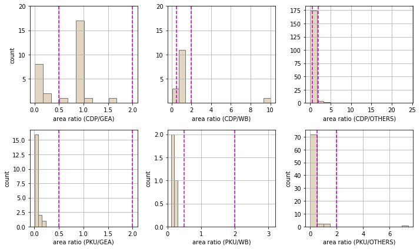
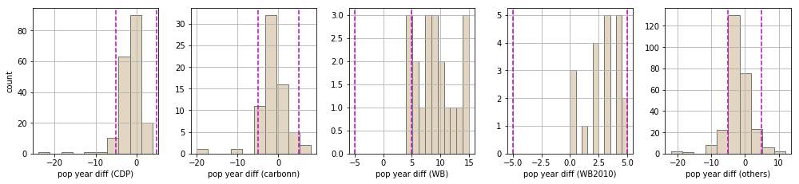
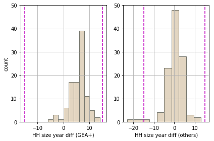

from matplotlib.pyplot import *
%matplotlib inlineQA/QC spatial and temporal flags
Add to each data a spatial quality flag (SQF) to reflect the consistency of the spatial unit of ancillary data and CDP emission data, as well as a temporal quality flag (TQF) to reflect the consistency of temporal units with the year of reported emissions.
import numpy as np
from matplotlib import pyplot as pltimport pandas as pd
import collections
import os
import csvpd.set_option('display.max_colwidth', -1)variables
var_city = 'city name'
area_cdp = 'Land area (in square km) (CDP)'
area_pku = 'Built-up Area (km2) (PKU)'
area_others = 'area [km2] (others)'
area_others_source ='area [km2] (others) source'
refyr = 'Year of Emission'
dset = 'Scope 1 dataset'functions
def fn_computeSQF(df, refattr, attr, flag):
""" Add quality flag 0 to col 'flag' if ratio refattr/attr is not in [0.5, 2], and 1 otherwise"""
inconsistent = (df[refattr]/df[attr] <= 0.5) | (df[refattr]/df[attr] >= 2)
consistent = (df[refattr]/df[attr] > 0.5) & (df[refattr]/df[attr] < 2)
df[flag] = np.nan
df.loc[inconsistent, flag] = 0 #inconsistent
df.loc[consistent, flag] = 1 #consistent
print 'Spatial Quality Flag = 0 count: ' + repr(df.loc[inconsistent, var_city].count())
print 'Spatial Quality Flag = 1 count: ' + repr(df.loc[consistent, var_city].count())
return dfRead data
#Merged emissions and ancillary datasets from Methods4_addAncillaryData.ipynb
fname = 'DATA/INTERMEDIATE_FILES/merged_emissions_and_ancillary_datasets.tsv'
df = pd.read_csv(fname, sep="\t")
df.drop('Unnamed: 0', axis=1, inplace=True)print df.shape
df.head(2)(343, 166)| city name | City Name (CDP) | full city name (carbonn) | full city name (PKU) | full city name (GEA) | full city name (UITP) | full city name (WB) | Boundary (CDP) | city_type (carbonn) | definition (WB) | ... | High BUA pop density - 2000 (UEX) | Low BUA pop density – 2014 (UEX) | High BUA pop density - 2014 (UEX) | Exports (m3) | Production (m3) | Export/Production | CH4_waste/person | CH4_(waste+natgas)/person | corrected CH4_(waste+natgas)/person | data from CIA World Fact Book for 2014 | |
|---|---|---|---|---|---|---|---|---|---|---|---|---|---|---|---|---|---|---|---|---|---|
| 0 | Aarhus | Aarhus Kommune | NaN | NaN | NaN | NaN | NaN | Administrative boundary of a local government | NaN | NaN | ... | 2660.083381 | 244.122636 | 2783.303589 | 4.517000e+09 | 6.412000e+09 | 0.70 | 0.010683 | 0.017031 | 0.012559 | NaN |
| 1 | Abington | Abington Township | NaN | NaN | NaN | NaN | NaN | Other: Municipal boundary | NaN | NaN | ... | NaN | NaN | NaN | 4.287000e+10 | 7.662000e+11 | 0.06 | 0.017699 | 0.036729 | 0.035665 | NaN |
2 rows × 166 columns
Spatial Quality Flag
SQF = 1 if the spatial unit of this data is consistent with the one of emissions, and SQF = 0 if this is not the case. Spatial units are considered to be consistent if the ratio of the area of a given ancillary data coming from DCDP, DOTHERS, DGEA and DWB to the area of DCDP is less than two.
Area
‘Land area (in square km) (CDP)’
‘area_size (GEA)’
‘area_size (WB)’
‘Built-up Area (km2) (PKU)’
‘area [km2] (external)’
Note that carbonn cities do not report area.
Three data entry errors for CDP area: * the area for Faro = 202,570 km2 in DCDP vs. 202.57 km2 in DOTHERS (https://en.wikipedia.org/wiki/Faro,_Portugal). * the area for Porto Alegre = 469,684 km2 in DCDP vs. 496.827 km2 in DOTHERS (https://en.wikipedia.org/wiki/Porto_Alegre). * the area for Salvador = 692,819 km2 in DCDP vs. 693 km2 in DOTHERS (http://www.c40.org/cities/salvador).
Can assume that the comma should be a decimal point.
df.loc[df[var_city]=='Faro', area_cdp] = 202.57
df.loc[df[var_city]=='Porto Alegre', area_cdp] = 469.684
df.loc[df[var_city]=='Salvador', area_cdp] = 692.819#No overlap between CDP and PKU cities
df.loc[(~df[area_cdp].isnull()) & (~df[area_pku].isnull()), var_city]Series([], Name: city name, dtype: object)#There is overlap between PKU and GEA cities
print df.loc[(~df[area_cdp].isnull()) & (~df['area_size (GEA)'].isnull()), var_city].count() #30
#There is overlap between PKU and WB cities
print df.loc[(~df[area_cdp].isnull()) & (~df['area_size (WB)'].isnull()), var_city].count() #15
#There is overlap between PKU and external area values
print df.loc[(~df[area_cdp].isnull()) & (~df[area_others].isnull()), var_city].count() #18430
15
184#CDP area outlier?
print (df[area_cdp]/df[area_others]).max() #outlier comes from Kadiovacik
df.loc[(df[area_cdp]/df[area_others])>2, [var_city, area_cdp,area_others ] ]25856.521739130432| city name | Land area (in square km) (CDP) | area [km2] (others) | |
|---|---|---|---|
| 45 | Bournemouth | 108.0 | 46.180000 |
| 54 | Canberra | 2358.0 | 814.200000 |
| 97 | Genova | 1118.0 | 240.290000 |
| 150 | Kadiovacik | 5947.0 | 0.230000 |
| 158 | La Paz | 2010.0 | 472.000000 |
| 258 | Santiago | 15403.0 | 641.000000 |
| 260 | Santiago de Guayaquil | 5047.0 | 344.500000 |
| 264 | Seattle | 3692.0 | 217.403761 |
#CDP area outlier?
df.loc[(df[area_cdp]/df[area_others])<0.5, [var_city, area_cdp,area_others ] ]| city name | Land area (in square km) (CDP) | area [km2] (others) | |
|---|---|---|---|
| 10 | Amman | 800.0 | 1680.000000 |
| 33 | Benicia | 13.0 | 33.488571 |
| 47 | Brisbane, CA | 7.5 | 52.000000 |
| 56 | Caracas | 776.0 | 4715.100000 |
| 123 | Hjørring | 7.5 | 929.580000 |
| 164 | Lancaster, PA | 7.3 | 18.725628 |
| 166 | Las Vegas | 136.0 | 351.772442 |
| 249 | San Antonio | 426.0 | 1193.804091 |
print (df.loc[df[var_city]!='Kadiovacik', area_cdp]/df[area_others]).max()24.029641185647424f, axs = plt.subplots(nrows=2, ncols=3,figsize=(10,6))
edgeColour = '#75766D'
barfill = '#E2D5C1'
#CDP
ax = plt.subplot(2, 3, 1)
(df[area_cdp]/df['area_size (GEA)']).hist(color=barfill, ec=edgeColour)
plt.ylabel('count')
plt.ylim((0, 20))
plt.yticks([5,10,15,20])
plt.xlabel('area ratio (CDP/GEA)')
plt.axvline(x=2, color='m', linestyle='--')
plt.axvline(x=0.5, color='m', linestyle='--')
ax = plt.subplot(2, 3, 2)
(df[area_cdp]/df['area_size (WB)']).hist(bins=15,color=barfill, ec=edgeColour)
plt.xlabel('area ratio (CDP/WB)')
plt.ylim((0, 20))
plt.yticks([5,10,15,20])
plt.axvline(x=2, color='m', linestyle='--')
plt.axvline(x=0.5, color='m', linestyle='--')
ax = plt.subplot(2, 3, 3)
(df.loc[df[var_city]!='Kadiovacik', 'Land area (in square km) (CDP)']/df[area_others]).hist(bins=15,color=barfill, ec=edgeColour)
plt.xlabel('area ratio (CDP/OTHERS)')
plt.axvline(x=2, color='m', linestyle='--')
plt.axvline(x=0.5, color='m', linestyle='--')
#PKU
ax = plt.subplot(2,3,4)
(df['Built-up Area (km2) (PKU)']/df['area_size (GEA)']).hist(bins=3,color=barfill, ec=edgeColour)
plt.ylabel('count')
plt.xlabel('area ratio (PKU/GEA)')
plt.axvline(x=2, color='m', linestyle='--')
plt.axvline(x=0.5, color='m', linestyle='--')
ax = plt.subplot(2,3,5)
(df['Built-up Area (km2) (PKU)']/df['area_size (WB)']).hist(bins=2,color=barfill, ec=edgeColour)
plt.ylabel('count')
plt.xlabel('area ratio (PKU/WB)')
plt.xlim((0, 3.2))
plt.axvline(x=2, color='m', linestyle='--')
plt.axvline(x=0.5, color='m', linestyle='--')
ax = plt.subplot(2,3,6)
(df['Built-up Area (km2) (PKU)']/df[area_others]).hist(bins=15,color=barfill, ec=edgeColour)
plt.ylabel('count')
plt.xlabel('area ratio (PKU/OTHERS)')
plt.axvline(x=2, color='m', linestyle='--')
plt.axvline(x=0.5, color='m', linestyle='--')
f.tight_layout()
print df.loc[~df['area_size (GEA)'].isnull(), var_city].count()
print df.loc[(df['Built-up Area (km2) (PKU)']/df['area_size (GEA)'])>0, var_city].count()62
19#SQF Area (CDP vs others)
refattr = 'Land area (in square km) (CDP)'
fn_computeSQF(df, refattr, 'area_size (GEA)', 'AQF (CDP/GEA)')
print ''
fn_computeSQF(df, refattr, 'area_size (WB)', 'AQF (CDP/WB)')
print ''
fn_computeSQF(df, refattr, area_others, 'AQF (CDP/OTHERS)')
print ''Spatial Quality Flag = 0 count: 10
Spatial Quality Flag = 1 count: 20
Spatial Quality Flag = 0 count: 3
Spatial Quality Flag = 1 count: 12
Spatial Quality Flag = 0 count: 16
Spatial Quality Flag = 1 count: 168
sqf = 'AQF (CDP/GEA)'
print df.loc[(df[sqf]==0), var_city].count()
df.loc[(df[sqf]==0), [var_city,'City Name (CDP)',area_cdp, 'area_size (GEA)', sqf] ]10| city name | City Name (CDP) | Land area (in square km) (CDP) | area_size (GEA) | AQF (CDP/GEA) | |
|---|---|---|---|---|---|
| 16 | Athens | City of Athens | 39.0 | 412.00 | 0.0 |
| 37 | Birmingham | Birmingham City Council | 267.8 | 1598.00 | 0.0 |
| 57 | Cardiff | City of Cardiff | 140.0 | 475.30 | 0.0 |
| 119 | Helsinki | City of Helsinki | 214.0 | 715.49 | 0.0 |
| 173 | Lisbon | City of Lisbon | 85.0 | 958.00 | 0.0 |
| 186 | Melbourne | City of Melbourne | 38.0 | 2640.35 | 0.0 |
| 216 | Paris | City of Paris | 105.0 | 17175.00 | 0.0 |
| 279 | Stockholm | City of Stockholm | 216.0 | 6488.00 | 0.0 |
| 283 | Sydney | City of Sydney | 26.0 | 12144.60 | 0.0 |
| 294 | Toronto | City of Toronto | 634.0 | 7125.00 | 0.0 |
sqf = 'AQF (CDP/WB)'
print df.loc[(df[sqf]==0), var_city].count()
df.loc[(df[sqf]==0), [var_city,'City Name (CDP)',area_cdp, 'area_size (WB)','definition (WB)' ,area_others,area_others_source,sqf] ]3| city name | City Name (CDP) | Land area (in square km) (CDP) | area_size (WB) | definition (WB) | area [km2] (others) | area [km2] (others) source | AQF (CDP/WB) | |
|---|---|---|---|---|---|---|---|---|
| 178 | Los Angeles | City of Los Angeles | 1215.0 | 10517.6 | County | 1213.850613 | https://www.census.gov/quickfacts/fact/table/losangelescitycalifornia,US/PST045216 | 0.0 |
| 264 | Seattle | City of Seattle | 3692.0 | 369.2 | City | 217.403761 | https://www.census.gov/quickfacts/fact/table/seattlecitywashington/PST045216 | 0.0 |
| 294 | Toronto | City of Toronto | 634.0 | 7125.0 | Greater Toronto Area | 634.000000 | http://www.c40.org/cities/toronto | 0.0 |
sqf = 'AQF (CDP/OTHERS)'
print df.loc[(df[sqf]==0), var_city].count()
df.loc[(df[sqf]==0), [var_city,'City Name (CDP)',area_cdp, area_others,area_others_source, sqf] ]16| city name | City Name (CDP) | Land area (in square km) (CDP) | area [km2] (others) | area [km2] (others) source | AQF (CDP/OTHERS) | |
|---|---|---|---|---|---|---|
| 10 | Amman | Greater Amman Municipality | 800.0 | 1680.000000 | https://en.wikipedia.org/wiki/Amman | 0.0 |
| 33 | Benicia | City of Benicia | 13.0 | 33.488571 | https://www.census.gov/quickfacts/fact/table/beniciacitycalifornia/PST045216 | 0.0 |
| 45 | Bournemouth | City of Bournemouth | 108.0 | 46.180000 | https://en.wikipedia.org/wiki/Bournemouth | 0.0 |
| 47 | Brisbane, CA | City of Brisbane, CA | 7.5 | 52.000000 | https://en.wikipedia.org/wiki/Brisbane,_California#cite_note-CenPopGazetteer2016-3 | 0.0 |
| 54 | Canberra | Canberra | 2358.0 | 814.200000 | https://en.wikipedia.org/wiki/Canberra#cite_note-area-4 | 0.0 |
| 56 | Caracas | Alcaldía Metropolitana de Caracas | 776.0 | 4715.100000 | https://en.wikipedia.org/wiki/Metropolitan_Region_of_Caracas | 0.0 |
| 97 | Genova | Comune di Genova | 1118.0 | 240.290000 | https://it.wikipedia.org/wiki/Genova | 0.0 |
| 123 | Hjørring | Municipality of Hjørring | 7.5 | 929.580000 | https://en.wikipedia.org/wiki/Hjørring_Municipality | 0.0 |
| 150 | Kadiovacik | Village of Kadiovacik | 5947.0 | 0.230000 | estimated manually by drawing a square around village centre using https://www.daftlogic.com/projects-google-maps-area-calculator-tool.htm | 0.0 |
| 158 | La Paz | Municipalidad de La Paz | 2010.0 | 472.000000 | https://en.wikipedia.org/wiki/La_Paz | 0.0 |
| 164 | Lancaster, PA | City of Lancaster, PA | 7.3 | 18.725628 | https://www.census.gov/quickfacts/fact/table/lancastercitypennsylvania/PST045216 | 0.0 |
| 166 | Las Vegas | City of Las Vegas | 136.0 | 351.772442 | https://www.census.gov/quickfacts/fact/table/lasvegascitynevada/PST045216 | 0.0 |
| 249 | San Antonio | City of San Antonio | 426.0 | 1193.804091 | https://www.census.gov/quickfacts/fact/table/sanantoniocitytexas/PST045216 | 0.0 |
| 258 | Santiago | Región Metropolitana de Santiago | 15403.0 | 641.000000 | http://www.c40.org/cities/santiago | 0.0 |
| 260 | Santiago de Guayaquil | Santiago de Guayaquil | 5047.0 | 344.500000 | https://en.wikipedia.org/wiki/Guayaquil | 0.0 |
| 264 | Seattle | City of Seattle | 3692.0 | 217.403761 | https://www.census.gov/quickfacts/fact/table/seattlecitywashington/PST045216 | 0.0 |
#PKU Area (PKU vs others)
refattr = 'Built-up Area (km2) (PKU)'
fn_computeSQF(df, refattr, 'area_size (GEA)', 'AQF (PKU/GEA)')
print ''
fn_computeSQF(df, refattr, 'area_size (WB)', 'AQF (PKU/WB)')
print ''
fn_computeSQF(df, refattr, area_others, 'AQF (PKU/OTHERS)')
print ''Spatial Quality Flag = 0 count: 19
Spatial Quality Flag = 1 count: 0
Spatial Quality Flag = 0 count: 3
Spatial Quality Flag = 1 count: 0
Spatial Quality Flag = 0 count: 73
Spatial Quality Flag = 1 count: 4
print (df['area_size (GEA)']/df['Built-up Area (km2) (PKU)']).mean()
print (df['area_size (GEA)']/df['Built-up Area (km2) (PKU)']).std()
print (df['area_size (GEA)']/df['Built-up Area (km2) (PKU)']).median()
print ''
print (df['area_size (GEA)']).mean()
print (df['Built-up Area (km2) (PKU)']).mean()37.2417978785
34.2302929619
24.4998338318
5230.83009677
341.202409639#Is PKU Built-up Area always smaller than the other areas?
dset = 'Scope-1 source dataset'
print (df['Built-up Area (km2) (PKU)']/df['area_size (GEA)']).mean()
print (df['Built-up Area (km2) (PKU)']/df['area_size (GEA)']).std()
print (df['Built-up Area (km2) (PKU)']/df['area_size (GEA)']).median()
df.loc[(df[dset]=='PKU') & (~df['area_size (GEA)'].isnull()), ['Built-up Area (km2) (PKU)','area_size (GEA)']]0.0519530749549
0.0510052691265
0.0408166033641| Built-up Area (km2) (PKU) | area_size (GEA) | |
|---|---|---|
| 59 | 461.1 | 20532.00 |
| 60 | 433.3 | 11819.00 |
| 71 | 513.5 | 13237.00 |
| 95 | 518.1 | 12177.00 |
| 104 | 202.8 | 8034.00 |
| 107 | 349.6 | 53000.00 |
| 108 | 139.9 | 2237.00 |
| 115 | 393.7 | 7029.48 |
| 125 | 244.9 | 17224.00 |
| 145 | 626.6 | 8177.00 |
| 165 | 183.3 | 13300.00 |
| 197 | 300.9 | 7372.00 |
| 199 | 736.6 | 6598.00 |
| 208 | 422.8 | 9816.00 |
| 233 | 919.6 | 11026.00 |
| 271 | 591.0 | 12942.00 |
| 273 | 297.3 | 15722.00 |
| 290 | 1294.1 | 5606.90 |
| 323 | 127.7 | 7372.00 |
#Is PKU Built-up Area always smaller than the other areas?
dset = 'Scope-1 source dataset'
df.loc[(df[dset]=='PKU') & (~df['area_size (WB)'].isnull()), ['Built-up Area (km2) (PKU)','area_size (WB)']]| Built-up Area (km2) (PKU) | area_size (WB) | |
|---|---|---|
| 31 | 1733.8 | 16801.25 |
| 269 | 1921.1 | 6340.50 |
| 290 | 1294.1 | 11760.00 |
sqf = 'AQF (PKU/GEA)'
print df.loc[(df[sqf]==0), var_city].count()
df.loc[(df[sqf]==0), [var_city,'full city name (PKU)','Built-up Area (km2) (PKU)', 'area_size (GEA)', sqf] ]19| city name | full city name (PKU) | Built-up Area (km2) (PKU) | area_size (GEA) | AQF (PKU/GEA) | |
|---|---|---|---|---|---|
| 59 | Changchun | Changchun | 461.1 | 20532.00 | 0.0 |
| 60 | Changsha, Hunan | Changsha | 433.3 | 11819.00 | 0.0 |
| 71 | Dalian | Dalian | 513.5 | 13237.00 | 0.0 |
| 95 | Fuzhou | Fuzhou | 518.1 | 12177.00 | 0.0 |
| 104 | Guiyang | Guiyang | 202.8 | 8034.00 | 0.0 |
| 107 | Haerbin | Haerbin | 349.6 | 53000.00 | 0.0 |
| 108 | Haikou | Haikou | 139.9 | 2237.00 | 0.0 |
| 115 | Hefei | Hefei | 393.7 | 7029.48 | 0.0 |
| 125 | Hohhot | Huhehaote | 244.9 | 17224.00 | 0.0 |
| 145 | Jinan, Shandong | Jinan | 626.6 | 8177.00 | 0.0 |
| 165 | Lanzhou | Lanzhou | 183.3 | 13300.00 | 0.0 |
| 197 | Nanchang | Nanchang | 300.9 | 7372.00 | 0.0 |
| 199 | Nanjing, Jiangsu | Nanjing | 736.6 | 6598.00 | 0.0 |
| 208 | Ningbo | Ningbo | 422.8 | 9816.00 | 0.0 |
| 233 | Qingdao | Qingdao | 919.6 | 11026.00 | 0.0 |
| 271 | Shenyang | Shenyang | 591.0 | 12942.00 | 0.0 |
| 273 | Shijiazhuang | Shijiazhuang | 297.3 | 15722.00 | 0.0 |
| 290 | Tianjin | Tianjin | 1294.1 | 5606.90 | 0.0 |
| 323 | Xining | Xining | 127.7 | 7372.00 | 0.0 |
sqf = 'AQF (PKU/WB)'
print df.loc[(df[sqf]==0), var_city].count()
df.loc[(df[sqf]==0), [var_city,'full city name (PKU)','Built-up Area (km2) (PKU)', 'area_size (WB)','definition (WB)', sqf] ]3| city name | full city name (PKU) | Built-up Area (km2) (PKU) | area_size (WB) | definition (WB) | AQF (PKU/WB) | |
|---|---|---|---|---|---|---|
| 31 | Beijing | Bejing | 1733.8 | 16801.25 | Beijing Government Administered Area (Province) | 0.0 |
| 269 | Shanghai | Shanghai | 1921.1 | 6340.50 | Shanghai Government Administered Area (Province) | 0.0 |
| 290 | Tianjin | Tianjin | 1294.1 | 11760.00 | Tianjin Government Administered Area (Province) | 0.0 |
sqf = 'AQF (PKU/OTHERS)'
print df.loc[(df[sqf]==0), var_city].count()
df.loc[(df[sqf]==0), [var_city,'full city name (PKU)','Built-up Area (km2) (PKU)', area_others,'area [km2] (external) source', sqf] ]73/homel/cnangini/anaconda2/lib/python2.7/site-packages/ipykernel_launcher.py:3: FutureWarning:
Passing list-likes to .loc or [] with any missing label will raise
KeyError in the future, you can use .reindex() as an alternative.
See the documentation here:
http://pandas.pydata.org/pandas-docs/stable/indexing.html#deprecate-loc-reindex-listlike
This is separate from the ipykernel package so we can avoid doing imports until
/homel/cnangini/anaconda2/lib/python2.7/site-packages/pandas/core/indexing.py:1367: FutureWarning:
Passing list-likes to .loc or [] with any missing label will raise
KeyError in the future, you can use .reindex() as an alternative.
See the documentation here:
http://pandas.pydata.org/pandas-docs/stable/indexing.html#deprecate-loc-reindex-listlike
return self._getitem_tuple(key)| city name | full city name (PKU) | Built-up Area (km2) (PKU) | area [km2] (others) | area [km2] (external) source | AQF (PKU/OTHERS) | |
|---|---|---|---|---|---|---|
| 12 | Anshan | Anshan | 200.8 | 624.00 | NaN | 0.0 |
| 13 | Anyang | Anyang | 161.1 | 543.50 | NaN | 0.0 |
| 24 | Baoding | Baoding | 133.1 | 326.00 | NaN | 0.0 |
| 25 | Baotou | Baotou | 349.5 | 2662.00 | NaN | 0.0 |
| 34 | Benxi | Benxi | 64.6 | 907.00 | NaN | 0.0 |
| 59 | Changchun | Changchun | 461.1 | 4738.00 | NaN | 0.0 |
| 60 | Changsha, Hunan | Changsha | 433.3 | 1917.00 | NaN | 0.0 |
| 61 | Changzhou | Changzhou | 329.5 | 1872.10 | NaN | 0.0 |
| 62 | Chengdou | Chengdou | 783.0 | 3679.90 | NaN | 0.0 |
| 71 | Dalian | Dalian | 513.5 | 13237.00 | NaN | 0.0 |
| 73 | Dandong | Dandong | 95.2 | 830.00 | NaN | 0.0 |
| 74 | Daqing | Daqing | 207.5 | 5107.00 | NaN | 0.0 |
| 75 | Datong | Datong | 185.4 | 2080.00 | NaN | 0.0 |
| 93 | Fushun | Fushun | 142.3 | 1416.00 | NaN | 0.0 |
| 94 | Fuxin | Fuxin | 79.1 | 459.00 | NaN | 0.0 |
| 102 | Guangzhou | Guangzhou | 918.7 | 3843.43 | NaN | 0.0 |
| 104 | Guiyang | Guiyang | 202.8 | 2403.40 | NaN | 0.0 |
| 107 | Haerbin | Haerbin | 349.6 | 4640.40 | NaN | 0.0 |
| 108 | Haikou | Haikou | 139.9 | 2237.00 | NaN | 0.0 |
| 112 | Hangzhou | Hangzhou | 672.4 | 8000.00 | NaN | 0.0 |
| 115 | Hefei | Hefei | 393.7 | 838.50 | NaN | 0.0 |
| 116 | Hegang | Hegang | 64.7 | 11849.00 | NaN | 0.0 |
| 118 | Heilongjiang | Yichun | 61.8 | 39017.00 | NaN | 0.0 |
| 120 | Hengyang | Hengyang | 94.4 | 722.00 | NaN | 0.0 |
| 125 | Hohhot | Huhehaote | 244.9 | 2065.10 | NaN | 0.0 |
| 128 | Huaibei | Huaibei | 99.9 | 748.40 | NaN | 0.0 |
| 129 | Huainan | Huainan | 165.7 | 1492.30 | NaN | 0.0 |
| 142 | Jiamusi | Jiamusi | 57.1 | 882.50 | NaN | 0.0 |
| 143 | Jiaozhuo | Jiaozhuo | 121.7 | 413.80 | NaN | 0.0 |
| 144 | Jilin | Jilin | 180.3 | 3663.90 | NaN | 0.0 |
| ... | ... | ... | ... | ... | ... | ... |
| 208 | Ningbo | Ningbo | 422.8 | 2461.80 | NaN | 0.0 |
| 224 | Pingdingshan | Pingdingshan | 163.4 | 384.00 | NaN | 0.0 |
| 233 | Qingdao | Qingdao | 919.6 | 3239.00 | NaN | 0.0 |
| 234 | Qiqihaer | Qiqihaer | 154.1 | 4039.30 | NaN | 0.0 |
| 269 | Shanghai | Shanghai | 1921.1 | 6341.00 | NaN | 0.0 |
| 270 | Shantou | Shantou | 230.9 | 2248.39 | NaN | 0.0 |
| 271 | Shenyang | Shenyang | 591.0 | 3464.00 | NaN | 0.0 |
| 272 | Shenzhen | Shenzhen | 932.6 | 2050.00 | NaN | 0.0 |
| 273 | Shijiazhuang | Shijiazhuang | 297.3 | 15848.00 | NaN | 0.0 |
| 282 | Suzhou | Suzhou | 832.1 | 8488.42 | NaN | 0.0 |
| 284 | Taian | Taian | 154.3 | 2086.80 | NaN | 0.0 |
| 286 | Taiyuan, Shanxi | Taiyuan | 246.0 | 1460.00 | NaN | 0.0 |
| 287 | Tangshan | Tangshan | 417.8 | 3874.00 | NaN | 0.0 |
| 290 | Tianjin | Tianjin | 1294.1 | 174.90 | NaN | 0.0 |
| 310 | Weifang | Weifang | 191.9 | 2646.10 | NaN | 0.0 |
| 317 | Wuhan | Wuhan | 822.2 | 8494.41 | NaN | 0.0 |
| 319 | Xi'an, Shaanxi | Xi'an | 509.9 | 9983.00 | NaN | 0.0 |
| 320 | Xiamen | Xiamen | 341.8 | 1699.39 | NaN | 0.0 |
| 321 | Xiangtan | Xiangtan | 112.3 | 280.00 | NaN | 0.0 |
| 322 | Xiangyang | Xiangyang | 131.2 | 3672.90 | NaN | 0.0 |
| 323 | Xining | Xining | 127.7 | 343.00 | NaN | 0.0 |
| 324 | Xinxiang | Xinxiang | 118.9 | 346.00 | NaN | 0.0 |
| 325 | Xuzhou | Xuzhou | 285.8 | 3037.00 | NaN | 0.0 |
| 328 | Yinchuan | Yinchuan | 187.8 | 2045.00 | NaN | 0.0 |
| 332 | Zhangjiakou | Zhangjiakou | 145.1 | 36861.56 | NaN | 0.0 |
| 333 | Zhanjiang | Zhanjiang | 95.1 | 1360.00 | NaN | 0.0 |
| 334 | Zhaozhuang | Zhaozhuang | 119.8 | 3069.00 | NaN | 0.0 |
| 335 | Zhengzhou | Zhengzhou | 495.6 | 1024.00 | NaN | 0.0 |
| 337 | Zibo | Zibo | 384.7 | 2972.00 | NaN | 0.0 |
| 342 | Ürümqi (Wulumqi) | Wulumuqi | 285.4 | 14577.00 | NaN | 0.0 |
73 rows × 6 columns
Temporal unit consistency
Ideally, all attributes should align with the year of the CDP2016 emissions (reference year). A temporal quality flag TQF = 1 was added if the year of an ancillary data differs by less than 5 years from the reference year for population, less than 15 years for household size, given the slow changes in this variable.
popyr_others = 'population (others) source year'
pop_others = 'population (others)'TQF population
def fn_computeTQF_pop(df,refyr, attr, qflag):
""" Add quality flag 0 or 1 to col 'qflag' if abs(refyr - attr) is >= c or < c, respectively, where
cutoff 'c' = 5 years for population and 15 years for household size given the slow changes of this variable.
"""
c = 5 #cutoff year for population
df[qflag] = np.nan
if attr == 'pop_2010 (WB)':
df.loc[(df[refyr] - 2010).abs() >= c, qflag] = 0
df.loc[(df[refyr] - 2010).abs() < c, qflag] = 1
print 'Temporal Quality Flag = 0 count: ' + repr(df.loc[(df[refyr] - 2010).abs() >= c, var_city].count())
print 'Temporal Quality Flag = 1 count: ' + repr(df.loc[(df[refyr] - 2010).abs() < c, var_city].count())
else:
df.loc[(df[refyr] - df[attr]).abs() >= c, qflag] = 0
df.loc[(df[refyr] - df[attr]).abs() < c, qflag] = 1
print 'Temporal Quality Flag = 0 count: ' + repr(df.loc[(df[refyr] - df[attr]).abs() >= c, var_city].count())
print 'Temporal Quality Flag = 1 count: ' + repr(df.loc[(df[refyr] - df[attr]).abs() < c, var_city].count())
return dfdf['dummy']=np.nan
df.loc[~df['pop_2010 (WB)'].isnull(), 'dummy'] = 2010
print df.loc[~df['dummy'].isnull(), var_city].count() #2020f, axs = plt.subplots(nrows=1, ncols=5,figsize=(14,6))
edgeColour = '#75766D'
barfill = '#E2D5C1'
ax = plt.subplot(2, 5, 1)
(df[refyr]-df['Current Population Year (CDP)']).hist(color=barfill, ec=edgeColour)
plt.ylabel('count')
plt.xlabel('pop year diff (CDP)')
plt.axvline(x=5, color='m', linestyle='--')
plt.axvline(x=-5, color='m', linestyle='--')
ax = plt.subplot(2, 5, 2)
(df[refyr]-df['pop_yr (carbonn)']).hist(color=barfill, ec=edgeColour)
plt.xlabel('pop year diff (carbonn)')
plt.axvline(x=5, color='m', linestyle='--')
plt.axvline(x=-5, color='m', linestyle='--')
ax = plt.subplot(2, 5, 3)
(df[refyr]-df['population_year (WB)']).hist(color=barfill, ec=edgeColour)
plt.xlabel('pop year diff (WB)')
plt.axvline(x=5, color='m', linestyle='--')
plt.axvline(x=-5, color='m', linestyle='--')
ax = plt.subplot(2,5,4)
(df[refyr]-df['dummy']).hist(color=barfill, ec=edgeColour)
plt.xlabel('pop year diff (WB2010)')
plt.axvline(x=5, color='m', linestyle='--')
plt.axvline(x=-5, color='m', linestyle='--')
ax = plt.subplot(2,5,5)
(df[refyr]-df[popyr_others]).hist(color=barfill, ec=edgeColour)
plt.xlabel('pop year diff (others)')
plt.axvline(x=5, color='m', linestyle='--')
plt.axvline(x=-5, color='m', linestyle='--')
f.tight_layout()
fn_computeTQF_pop(df,refyr, 'Current Population Year (CDP)', 'PQF (CDP)')
print ''
fn_computeTQF_pop(df,refyr, 'pop_yr (carbonn)', 'PQF (carbonn)')
print ''
fn_computeTQF_pop(df,refyr, 'population_year (WB)', 'PQF (WB)')
print ''
fn_computeTQF_pop(df,refyr, 'dummy', 'PQF (WB2010)')
print ''
fn_computeTQF_pop(df,refyr, popyr_others, 'PQF (OTHERS)')
print ''Temporal Quality Flag = 0 count: 14
Temporal Quality Flag = 1 count: 173
Temporal Quality Flag = 0 count: 11
Temporal Quality Flag = 1 count: 57
Temporal Quality Flag = 0 count: 17
Temporal Quality Flag = 1 count: 3
Temporal Quality Flag = 0 count: 2
Temporal Quality Flag = 1 count: 18
Temporal Quality Flag = 0 count: 59
Temporal Quality Flag = 1 count: 210
outcomes
attr='PQF (CDP)'
print 'total cities: ' + repr(df.loc[~df[attr].isnull(), var_city].count())
print 'inconsistent cities: ' + repr(df.loc[df[attr]==0, var_city].count() )
print df.loc[df[attr]==1, var_city].count()total cities: 187
inconsistent cities: 14
173delta = abs(df.loc[df[attr]==0, refyr] - df.loc[df[attr]==0, 'Current Population Year (CDP)'] )
print 'range: ' + repr(delta.min()) + ' - ' + repr(delta.max())
print ''
print deltarange: 5.0 - 24.0
30 5.0
41 5.0
52 5.0
89 8.0
162 7.0
207 5.0
221 24.0
245 5.0
251 7.0
257 5.0
259 5.0
302 5.0
306 11.0
315 17.0
dtype: float64attr='PQF (carbonn)'
print 'total cities: ' + repr(df.loc[~df[attr].isnull(), var_city].count())
print 'inconsistent cities: ' + repr(df.loc[df[attr]==0, var_city].count() )
print df.loc[df[attr]==1, var_city].count()total cities: 68
inconsistent cities: 11
57delta = abs(df.loc[df[attr]==0, refyr] - df.loc[df[attr]==0, 'pop_yr (carbonn)'] )
print 'range: ' + repr(delta.min()) + ' - ' + repr(delta.max())
print ''
print deltarange: 5.0 - 20.0
27 8.0
36 6.0
77 7.0
100 20.0
137 5.0
141 6.0
201 9.0
217 6.0
231 6.0
250 5.0
275 5.0
dtype: float64attr='PQF (WB)'
print 'total cities: ' + repr(df.loc[~df[attr].isnull(), var_city].count())
print 'inconsistent cities: ' + repr(df.loc[df[attr]==0, var_city].count() )
print df.loc[df[attr]==1, var_city].count()total cities: 20
inconsistent cities: 17
3delta = abs(df.loc[df[attr]==0, refyr] - df.loc[df[attr]==0, 'population_year (WB)'] )
print 'range: ' + repr(delta.min()) + ' - ' + repr(delta.max())
print ''
print deltarange: 6.0 - 15.0
19 8.0
26 6.0
53 12.0
55 6.0
78 9.0
101 10.0
178 13.0
187 14.0
189 9.0
206 10.0
227 9.0
243 14.0
261 11.0
264 7.0
268 15.0
291 8.0
294 8.0
dtype: float64attr='PQF (WB2010)'
print 'total cities: ' + repr(df.loc[~df[attr].isnull(), var_city].count())
print 'inconsistent cities: ' + repr(df.loc[df[attr]==0, var_city].count() )
print df.loc[df[attr]==1, var_city].count()total cities: 20
inconsistent cities: 2
18attr='PQF (OTHERS)'
print 'total cities: ' + repr(df.loc[~df[attr].isnull(), var_city].count())
print 'inconsistent cities: ' + repr(df.loc[df[attr]==0, var_city].count() )
print df.loc[df[attr]==1, var_city].count()total cities: 269
inconsistent cities: 59
210delta = abs(df.loc[df[attr]==0, refyr] - df.loc[df[attr]==0, popyr_others] )
print 'range: ' + repr(delta.min()) + ' - ' + repr(delta.max())
print ''
print deltarange: 5.0 - 22.0
1 6.0
8 6.0
23 9.0
30 5.0
33 6.0
36 6.0
41 7.0
47 6.0
48 5.0
49 6.0
52 6.0
65 6.0
72 6.0
76 6.0
81 5.0
89 10.0
92 6.0
97 5.0
99 6.0
100 22.0
106 5.0
110 11.0
117 5.0
123 6.0
137 7.0
141 9.0
161 9.0
162 9.0
185 12.0
191 7.0
199 7.0
201 10.0
217 5.0
218 5.0
220 6.0
221 22.0
222 5.0
235 5.0
236 5.0
245 6.0
251 7.0
256 5.0
257 5.0
261 6.0
265 6.0
267 6.0
272 7.0
275 5.0
292 5.0
298 5.0
302 11.0
304 8.0
306 11.0
312 8.0
313 5.0
315 18.0
319 5.0
330 6.0
342 7.0
dtype: float64TQF household size
hhyr_others = 'year_household_size (updated) (others)'
hhyr_gea = 'year_household_size (GEA+)'print df.loc[(~df[hhyr_others].isnull()) & (~df[hhyr_gea].isnull()), var_city].count()
df.loc[(~df[hhyr_others].isnull()) & (~df[hhyr_gea].isnull()), [var_city, 'Scope 1 year',hhyr_gea, hhyr_others] ]52/homel/cnangini/anaconda2/lib/python2.7/site-packages/ipykernel_launcher.py:2: FutureWarning:
Passing list-likes to .loc or [] with any missing label will raise
KeyError in the future, you can use .reindex() as an alternative.
See the documentation here:
http://pandas.pydata.org/pandas-docs/stable/indexing.html#deprecate-loc-reindex-listlike
| city name | Scope 1 year | year_household_size (GEA+) | year_household_size (updated) (others) | |
|---|---|---|---|---|
| 11 | Amsterdam | NaN | 2004.0 | 2013 |
| 16 | Athens | NaN | 2004.0 | 2011 |
| 17 | Atlanta | NaN | 2010 | 2011-2015 |
| 19 | Austin | NaN | 2010.0 | 2011-2015 |
| 26 | Barcelona | NaN | 2004.0 | 2014 |
| 37 | Birmingham | NaN | 2011.0 | 2013 |
| 41 | Bologna | NaN | 2004 | 2013 |
| 44 | Boulder | NaN | 2010.0 | 2011-2015 |
| 46 | Brasília | NaN | 2010 | 2010 |
| 51 | Buffalo City | NaN | 2010.0 | 2007 |
| 53 | Calgary | NaN | 2006.0 | 2011 |
| 55 | Cape Town | NaN | 2008.0 | 2008 |
| 63 | Chicago | NaN | 2010 | 2011-2015 |
| 69 | Copenhagen | NaN | 2012.0 | 2017 |
| 70 | Curitiba | NaN | 2010 | 2010 |
| 78 | Denver | NaN | 2010.0 | 2011-2015 |
| 101 | Greater London | NaN | 2011.0 | 2011 |
| 109 | Hamburg | NaN | 2004.0 | 2012 |
| 119 | Helsinki | NaN | 2004.0 | 2014 |
| 126 | Hong Kong | NaN | 2012.0 | 2016 |
| 127 | Houston | NaN | 2010 | 2011-2015 |
| 137 | Istanbul | NaN | 2000.0 | 2016 |
| 149 | Johannesburg | NaN | 2007.0 | 2007 |
| 168 | Leicester | NaN | 2011.0 | 2013 |
| 173 | Lisbon | NaN | 2011.0 | 2011 |
| 175 | Ljubljana | NaN | 2004.0 | 2011 |
| 178 | Los Angeles | NaN | 2010.0 | 2011-2015 |
| 181 | Madrid | NaN | 2004.0 | 2014 |
| 185 | Manchester | NaN | 2004.0 | 2009 |
| 186 | Melbourne | NaN | 2011.0 | 2011 |
| 187 | Mexico City | NaN | 2010.0 | 2016 |
| 188 | Milano | NaN | 2004.0 | 2013 |
| 189 | Minneapolis | NaN | 2010.0 | 2011-2015 |
| 206 | New York City | NaN | 2010.0 | 2011-2015 |
| 213 | Oslo | NaN | 2004.0 | 2013 |
| 216 | Paris | NaN | ? (2006?) | 2012 |
| 227 | Portland, OR | NaN | 2010.0 | 2011-2015 |
| 230 | Pretoria Tshwane | NaN | 2007 | 2007 |
| 243 | Rio de Janeiro | NaN | 2010.0 | 2010 |
| 245 | Roma | NaN | 2004 | 2013 |
| 251 | San Diego | NaN | 2010 | 2011-2015 |
| 252 | San Francisco | NaN | 2010 | 2011-2015 |
| 264 | Seattle | NaN | 2010.0 | 2011-2015 |
| 268 | Seoul | NaN | 2009.0 | 2017 |
| 279 | Stockholm | NaN | 2011 | 2016 |
| 283 | Sydney | NaN | 2011 | 2011 |
| 291 | Tokyo | NaN | 2010.0 | 2017 |
| 293 | Torino | NaN | 2004 | 2013 |
| 294 | Toronto | NaN | 2006.0 | 2011 |
| 305 | Vancouver | NaN | 2006 | 2011 |
| 338 | Zürich | NaN | 2000 | 2014 |
| 341 | Örebro | NaN | 2011.0 | 2017 |
#NB: Paris GEA+ household value is a string
df.loc[(df[var_city]=='Paris') , 'year_household_size (GEA+)']216 ? (2006?)
Name: year_household_size (GEA+), dtype: object#Figure out flag value for string year range in external HH year
attr = hhyr_others
condnan = (~df[attr].isnull())
conds1 = (df[attr]=='2011-2015')
conds2 = (df[attr]=='2016-2017')
conds3 = (df[attr]=='2012-2016')
print df.loc[condnan & conds1 | conds2 | conds3, var_city].count()
df.loc[condnan & conds1 | conds2 | conds3, [var_city,'Scope 1 year',attr] ]65/homel/cnangini/anaconda2/lib/python2.7/site-packages/ipykernel_launcher.py:9: FutureWarning:
Passing list-likes to .loc or [] with any missing label will raise
KeyError in the future, you can use .reindex() as an alternative.
See the documentation here:
http://pandas.pydata.org/pandas-docs/stable/indexing.html#deprecate-loc-reindex-listlike
if __name__ == '__main__':| city name | Scope 1 year | year_household_size (updated) (others) | |
|---|---|---|---|
| 1 | Abington | NaN | 2011-2015 |
| 8 | Albany | NaN | 2011-2015 |
| 9 | Alton, IL | NaN | 2011-2015 |
| 14 | Arlington, VA | NaN | 2011-2015 |
| 15 | Aspen and Pitkin County | NaN | 2011-2015 |
| 17 | Atlanta | NaN | 2011-2015 |
| 19 | Austin | NaN | 2011-2015 |
| 21 | Baltimore | NaN | 2011-2015 |
| 33 | Benicia | NaN | 2011-2015 |
| 38 | Blacksburg | NaN | 2011-2015 |
| 43 | Boston | NaN | 2011-2015 |
| 44 | Boulder | NaN | 2011-2015 |
| 47 | Brisbane, CA | NaN | 2016-2017 |
| 52 | Burlington | NaN | 2011-2015 |
| 63 | Chicago | NaN | 2011-2015 |
| 65 | Cleveland | NaN | 2011-2015 |
| 68 | Columbus | NaN | 2011-2015 |
| 72 | Dallas | NaN | 2011-2015 |
| 76 | Davis, CA | NaN | 2011-2015 |
| 78 | Denver | NaN | 2011-2015 |
| 79 | Detroit | NaN | 2011-2015 |
| 80 | District of Columbia | NaN | 2011-2015 |
| 83 | Durham | NaN | 2011-2015 |
| 86 | Emeryville, CA | NaN | 2011-2015 |
| 87 | Eugene | NaN | 2011-2015 |
| 90 | Flagstaff | NaN | 2011-2015 |
| 92 | Fort Collins | NaN | 2012-2016 |
| 114 | Hayward | NaN | 2011-2015 |
| 121 | Hermosa Beach, CA | NaN | 2011-2015 |
| 127 | Houston | NaN | 2011-2015 |
| ... | ... | ... | ... |
| 164 | Lancaster, PA | NaN | 2011-2015 |
| 166 | Las Vegas | NaN | 2011-2015 |
| 177 | Los Altos Hills | NaN | 2011-2015 |
| 178 | Los Angeles | NaN | 2011-2015 |
| 189 | Minneapolis | NaN | 2011-2015 |
| 202 | Nashville and Davidson | NaN | 2011-2015 |
| 204 | New Orleans | NaN | 2011-2015 |
| 206 | New York City | NaN | 2011-2015 |
| 210 | Oakland | NaN | 2011-2015 |
| 215 | Palo Alto | NaN | 2011-2015 |
| 219 | Philadelphia | NaN | 2011-2015 |
| 222 | Piedmont, CA | NaN | 2011-2015 |
| 226 | Pittsburgh | NaN | 2011-2015 |
| 227 | Portland, OR | NaN | 2011-2015 |
| 240 | Reno | NaN | 2011-2015 |
| 242 | Richmond, VA | NaN | 2011-2015 |
| 244 | Roanoke | NaN | 2011-2015 |
| 249 | San Antonio | NaN | 2011-2015 |
| 251 | San Diego | NaN | 2011-2015 |
| 252 | San Francisco | NaN | 2011-2015 |
| 255 | Santa Monica | NaN | 2011-2015 |
| 263 | Savannah | NaN | 2011-2015 |
| 264 | Seattle | NaN | 2011-2015 |
| 276 | Somerville, MA | NaN | 2011-2015 |
| 278 | St Louis | NaN | 2011-2015 |
| 296 | Tucson | NaN | 2011-2015 |
| 302 | University City, MO | NaN | 2011-2015 |
| 307 | Vilnius | NaN | 2011-2015 |
| 312 | West Hollywood | NaN | 2011-2015 |
| 330 | Yonkers | NaN | 2011-2015 |
65 rows × 3 columns
print int(df.loc[condnan & conds1 | conds2 | conds3, attr].str.split('-').tolist()[0][0])2011f, axs = plt.subplots(figsize=(6,4))
edgeColour = '#75766D'
barfill = '#E2D5C1'
ax = plt.subplot(1, 2, 1)
(df[refyr]-df.loc[(df[var_city]!='Paris') , 'year_household_size (GEA+)'].apply(pd.to_numeric) ).hist(color=barfill, ec=edgeColour)
plt.ylabel('count')
plt.xlabel('HH size year diff (GEA+)')
plt.axvline(x=15, color='m', linestyle='--')
plt.axvline(x=-15, color='m', linestyle='--')
plt.ylim((0, 50))
condnan = (~df[hhyr_others].isnull())
condr1 = (df[hhyr_others]!='2011-2015')
condr2 = (df[hhyr_others]!='2016-2017')
condr3 = (df[hhyr_others]!='2012-2016')
ax = plt.subplot(1, 2, 2)
(df[refyr]- df.loc[condnan & condr1 & condr2 & condr3, hhyr_others].astype('int') ).hist(color=barfill, ec=edgeColour)
plt.xlabel('HH size year diff (others)')
plt.axvline(x=15, color='m', linestyle='--')
plt.axvline(x=-15, color='m', linestyle='--')
plt.ylim((0, 50))
f.tight_layout()
def fn_computeTQF_hh(df,refyr, attr, qflag):
""" Add quality flag 0 or 1 to col 'qflag' if abs(refyr - attr) is >= c or < c, respectively, where
cutoff 'c' = 5 years for population and 15 years for household size given the slow changes of this variable.
"""
c = 15 #cutoff year for household size
df[qflag] = np.nan
if attr == 'year_household_size (GEA+)':
cond = (df[var_city]!='Paris')
df[qflag] = df.loc[(df[refyr]-df.loc[cond,attr].apply(pd.to_numeric) ).abs() >= c, qflag] = 0
df[qflag] = df.loc[(df[refyr]-df.loc[cond,attr].apply(pd.to_numeric) ).abs() <c, qflag] = 1
print 'Temporal Quality Flag = 0 count: ' + repr(df.loc[ (df[refyr] - df.loc[cond, attr].apply(pd.to_numeric) ).abs() >= c, var_city].count())
print 'Temporal Quality Flag = 1 count: ' + repr(df.loc[ (df[refyr] - df.loc[cond, attr].apply(pd.to_numeric) ).abs() < c, var_city].count())
elif attr == 'year_household_size (updated) (external)':
#First compute flags for all numerical values
condnan = (~df[attr].isnull())
condr1 = (df[attr]!='2011-2015')
condr2 = (df[attr]!='2016-2017')
condr3 = (df[attr]!='2012-2016')
df[qflag] = df.loc[ (df[refyr]- df.loc[condnan & condr1 & condr2 & condr3, attr].astype('int')).abs() >= c, qflag] = 0
df[qflag] = df.loc[ (df[refyr]- df.loc[condnan & condr1 & condr2 & condr3, attr].astype('int')).abs() < c, qflag] = 1
print df.loc[ (df[refyr]- df.loc[condnan & condr1 & condr2 & condr3, attr].astype('int')).abs() >= c, var_city].count()
return dffn_computeTQF_hh(df,refyr, 'year_household_size (GEA+)', 'HQF (GEA+)')
print ''Temporal Quality Flag = 0 count: 0
Temporal Quality Flag = 1 count: 102
#Clean up
qflag = 'HQF (GEA+)'
attr='year_household_size (GEA+)'
df.loc[(df['year_household_size (GEA+)'].isnull()),qflag]=np.nan
df.loc[(df['year_household_size (GEA+)'].isnull()), [var_city, refyr,attr,qflag] ].head(3)| city name | Year of Emission | year_household_size (GEA+) | HQF (GEA+) | |
|---|---|---|---|---|
| 0 | Aarhus | 2016.0 | NaN | NaN |
| 1 | Abington | 2010.0 | NaN | NaN |
| 2 | Addis Ababa | 2012.0 | NaN | NaN |
#Compute 'TQF household size (external)' manually
c=15
attr = hhyr_others
qflag='HQF (OTHERS)'
condnan = (~df[attr].isnull())
condr1 = (df[attr]!='2011-2015')
condr2 = (df[attr]!='2016-2017')
condr3 = (df[attr]!='2012-2016')
print df.loc[ (df[refyr]- pd.to_numeric(df.loc[condnan & condr1 & condr2 & condr3, attr]) ).abs() >= c, var_city].count()
df.loc[ (df[refyr]- pd.to_numeric(df.loc[condnan & condr1 & condr2 & condr3, attr]) ).abs() >= c, qflag] = 0
df.loc[ (df[refyr]- pd.to_numeric(df.loc[condnan & condr1 & condr2 & condr3, attr]) ).abs() >= c, [var_city, refyr,attr,'HQF (OTHERS)'] ]2| city name | Year of Emission | year_household_size (updated) (others) | HQF (OTHERS) | |
|---|---|---|---|---|
| 100 | Graz | 1994.0 | 2013 | 0.0 |
| 221 | Piacenza | 1990.0 | 2013 | 0.0 |
print df.loc[ (df[refyr]- pd.to_numeric(df.loc[condnan & condr1 & condr2 & condr3, attr]) ).abs() < c, var_city].count()
df.loc[ (df[refyr]- pd.to_numeric(df.loc[condnan & condr1 & condr2 & condr3, attr]) ).abs() < c, qflag] = 1
df.loc[ (df[refyr]- pd.to_numeric(df.loc[condnan & condr1 & condr2 & condr3, attr]) ).abs() < c, [var_city, refyr,attr,'HQF (OTHERS)'] ]109| city name | Year of Emission | year_household_size (updated) (others) | HQF (OTHERS) | |
|---|---|---|---|---|
| 0 | Aarhus | 2016.0 | 2017 | 1.0 |
| 3 | Adelaide | 2013.0 | 2011 | 1.0 |
| 4 | Aerøskøbing | 2015.0 | 2017 | 1.0 |
| 7 | Ajax, ON | 2008.0 | 2011 | 1.0 |
| 10 | Amman | 2014.0 | 2008 | 1.0 |
| 11 | Amsterdam | 2016.0 | 2013 | 1.0 |
| 16 | Athens | 2014.0 | 2011 | 1.0 |
| 18 | Auckland | 2013.0 | 2013 | 1.0 |
| 26 | Barcelona | 2012.0 | 2014 | 1.0 |
| 28 | Barreiro | 2014.0 | 2011 | 1.0 |
| 29 | Basel | 2016.0 | 2014 | 1.0 |
| 32 | Belo Horizonte | 2013.0 | 2010 | 1.0 |
| 37 | Birmingham | 2013.0 | 2013 | 1.0 |
| 40 | Bogotá | 2015.0 | 2016 | 1.0 |
| 41 | Bologna | 2009.0 | 2013 | 1.0 |
| 45 | Bournemouth | 2013.0 | 2013 | 1.0 |
| 46 | Brasília | 2012.0 | 2010 | 1.0 |
| 51 | Buffalo City | 2007.0 | 2007 | 1.0 |
| 53 | Calgary | 2015.0 | 2011 | 1.0 |
| 54 | Canberra | 2015.0 | 2011 | 1.0 |
| 55 | Cape Town | 2012.0 | 2008 | 1.0 |
| 57 | Cardiff | 2013.0 | 2012 | 1.0 |
| 69 | Copenhagen | 2015.0 | 2017 | 1.0 |
| 70 | Curitiba | 2013.0 | 2010 | 1.0 |
| 81 | Dublin | 2011.0 | 2011 | 1.0 |
| 84 | Edmonton | 2014.0 | 2011 | 1.0 |
| 88 | Faro | 2010.0 | 2011 | 1.0 |
| 89 | Ferrara | 2007.0 | 2013 | 1.0 |
| 91 | Florianópolis | 2013.0 | 2010 | 1.0 |
| 97 | Genova | 2011.0 | 2013 | 1.0 |
| ... | ... | ... | ... | ... |
| 243 | Rio de Janeiro | 2012.0 | 2010 | 1.0 |
| 245 | Roma | 2010.0 | 2013 | 1.0 |
| 247 | Rotterdam | 2016.0 | 2013 | 1.0 |
| 248 | Salvador | 2013.0 | 2010 | 1.0 |
| 254 | San Luis Potosí | 2015.0 | 2016 | 1.0 |
| 258 | Santiago | 2013.0 | 2010 | 1.0 |
| 262 | Sapporo | 2014.0 | 2018 | 1.0 |
| 268 | Seoul | 2013.0 | 2017 | 1.0 |
| 277 | Sorocaba | 2012.0 | 2010 | 1.0 |
| 279 | Stockholm | 2015.0 | 2016 | 1.0 |
| 281 | Suwon | 2013.0 | 2015 | 1.0 |
| 283 | Sydney | 2015.0 | 2011 | 1.0 |
| 285 | Taipei City | 2014.0 | 2013 | 1.0 |
| 288 | Taoyuan | 2014.0 | 2013 | 1.0 |
| 291 | Tokyo | 2014.0 | 2017 | 1.0 |
| 293 | Torino | 2014.0 | 2013 | 1.0 |
| 294 | Toronto | 2013.0 | 2011 | 1.0 |
| 297 | Turku | 2013.0 | 2014 | 1.0 |
| 300 | Udine | 2013.0 | 2013 | 1.0 |
| 305 | Vancouver | 2014.0 | 2011 | 1.0 |
| 306 | Venezia | 2005.0 | 2013 | 1.0 |
| 309 | Warsaw | 2014.0 | 2011 | 1.0 |
| 311 | Wellington | 2014.0 | 2013 | 1.0 |
| 314 | Windsor, ON | 2014.0 | 2011 | 1.0 |
| 315 | Winnipeg | 1998.0 | 2011 | 1.0 |
| 327 | Yilan | 2013.0 | 2013 | 1.0 |
| 329 | Yokohama | 2013.0 | 2015 | 1.0 |
| 331 | Zaragoza | 2014.0 | 2014 | 1.0 |
| 338 | Zürich | 2014.0 | 2014 | 1.0 |
| 341 | Örebro | 2015.0 | 2017 | 1.0 |
109 rows × 4 columns
#Check
print df.loc[ (df[refyr]- pd.to_numeric(df.loc[condnan & condr1 & condr2 & condr3, attr]) ).abs() >= c, var_city].count()
print df.loc[ (df[refyr]- pd.to_numeric(df.loc[condnan & condr1 & condr2 & condr3, attr]) ).abs() < c, var_city].count()
print ''
print df.loc[df[qflag]==0, var_city].count()
print df.loc[df[qflag]==1, var_city].count()2
109
2
109#Next compute flags for string year ranges (eg '2011-2015')
conds1 = (df[attr]=='2011-2015')
conds2 = (df[attr]=='2016-2017')
conds3 = (df[attr]=='2012-2016')
#Check if min year in range exceeds emissions year
df[qflag] = df.loc[ (df[refyr]- int(df.loc[condnan & conds1 | conds2 | conds3, attr].str.split('-').tolist()[0][0]) ).abs() >= c, qflag] = 0
print df.loc[ (df[refyr]- int(df.loc[condnan & conds1 | conds2 | conds3, attr].str.split('-').tolist()[0][0]) ).abs() >= c, var_city].count()
df.loc[ (df[refyr]- int(df.loc[condnan & conds1 | conds2 | conds3, attr].str.split('-').tolist()[0][0]) ).abs() >= c,[var_city, refyr,attr,'HQF (OTHERS)'] ]2| city name | Year of Emission | year_household_size (updated) (others) | HQF (OTHERS) | |
|---|---|---|---|---|
| 100 | Graz | 1994.0 | 2013 | 0 |
| 221 | Piacenza | 1990.0 | 2013 | 0 |
#Check if min year in range is within c years of emissions year
condnan = (~df[attr].isnull())
df[qflag] = df.loc[(df[refyr]- int(df.loc[condnan & conds1 | conds2 | conds3, attr].str.split('-').tolist()[0][0]) ).abs() < c, qflag] = 1
print df.loc[ (df[refyr]- int(df.loc[condnan & conds1 | conds2 | conds3, attr].str.split('-').tolist()[0][0]) ).abs() < c, var_city].count()
df.loc[ (df[refyr]- int(df.loc[condnan & conds1 | conds2 | conds3, attr].str.split('-').tolist()[0][0]) ).abs() < c,[var_city, refyr,attr,'HQF (others)'] ]341/homel/cnangini/anaconda2/lib/python2.7/site-packages/ipykernel_launcher.py:7: FutureWarning:
Passing list-likes to .loc or [] with any missing label will raise
KeyError in the future, you can use .reindex() as an alternative.
See the documentation here:
http://pandas.pydata.org/pandas-docs/stable/indexing.html#deprecate-loc-reindex-listlike
import sys| city name | Year of Emission | year_household_size (updated) (others) | HQF (others) | |
|---|---|---|---|---|
| 0 | Aarhus | 2016.0 | 2017 | NaN |
| 1 | Abington | 2010.0 | 2011-2015 | NaN |
| 2 | Addis Ababa | 2012.0 | NaN | NaN |
| 3 | Adelaide | 2013.0 | 2011 | NaN |
| 4 | Aerøskøbing | 2015.0 | 2017 | NaN |
| 5 | Aguascalientes | 2010.0 | NaN | NaN |
| 6 | Ahmedabad | 2008.0 | NaN | NaN |
| 7 | Ajax, ON | 2008.0 | 2011 | NaN |
| 8 | Albany | 2010.0 | 2011-2015 | NaN |
| 9 | Alton, IL | 2013.0 | 2011-2015 | NaN |
| 10 | Amman | 2014.0 | 2008 | NaN |
| 11 | Amsterdam | 2016.0 | 2013 | NaN |
| 12 | Anshan | 2010.0 | NaN | NaN |
| 13 | Anyang | 2010.0 | NaN | NaN |
| 14 | Arlington, VA | 2015.0 | 2011-2015 | NaN |
| 15 | Aspen and Pitkin County | 2014.0 | 2011-2015 | NaN |
| 16 | Athens | 2014.0 | 2011 | NaN |
| 17 | Atlanta | 2014.0 | 2011-2015 | NaN |
| 18 | Auckland | 2013.0 | 2013 | NaN |
| 19 | Austin | 2013.0 | 2011-2015 | NaN |
| 20 | Balikpapan | 2015.0 | NaN | NaN |
| 21 | Baltimore | 2014.0 | 2011-2015 | NaN |
| 22 | Bandung | 2013.0 | NaN | NaN |
| 23 | Bangalore | 2008.0 | NaN | NaN |
| 24 | Baoding | 2010.0 | NaN | NaN |
| 25 | Baotou | 2010.0 | NaN | NaN |
| 26 | Barcelona | 2012.0 | 2014 | NaN |
| 27 | Barranquilla | 2013.0 | NaN | NaN |
| 28 | Barreiro | 2014.0 | 2011 | NaN |
| 29 | Basel | 2016.0 | 2014 | NaN |
| ... | ... | ... | ... | ... |
| 313 | Windhoek | 2016.0 | NaN | NaN |
| 314 | Windsor, ON | 2014.0 | 2011 | NaN |
| 315 | Winnipeg | 1998.0 | 2011 | NaN |
| 316 | Wonju | 2012.0 | NaN | NaN |
| 317 | Wuhan | 2010.0 | NaN | NaN |
| 318 | Wuxi | 2010.0 | NaN | NaN |
| 319 | Xi'an, Shaanxi | 2010.0 | NaN | NaN |
| 320 | Xiamen | 2010.0 | NaN | NaN |
| 321 | Xiangtan | 2010.0 | NaN | NaN |
| 322 | Xiangyang | 2010.0 | NaN | NaN |
| 323 | Xining | 2010.0 | NaN | NaN |
| 324 | Xinxiang | 2010.0 | NaN | NaN |
| 325 | Xuzhou | 2010.0 | NaN | NaN |
| 326 | Yantai | 2010.0 | NaN | NaN |
| 327 | Yilan | 2013.0 | 2013 | NaN |
| 328 | Yinchuan | 2010.0 | NaN | NaN |
| 329 | Yokohama | 2013.0 | 2015 | NaN |
| 330 | Yonkers | 2010.0 | 2011-2015 | NaN |
| 331 | Zaragoza | 2014.0 | 2014 | NaN |
| 332 | Zhangjiakou | 2010.0 | NaN | NaN |
| 333 | Zhanjiang | 2010.0 | NaN | NaN |
| 334 | Zhaozhuang | 2010.0 | NaN | NaN |
| 335 | Zhengzhou | 2010.0 | NaN | NaN |
| 336 | Zhuzhou | 2010.0 | NaN | NaN |
| 337 | Zibo | 2010.0 | NaN | NaN |
| 338 | Zürich | 2014.0 | 2014 | NaN |
| 339 | eThekwini | 2015.0 | NaN | NaN |
| 340 | Águeda | 2013.0 | NaN | NaN |
| 341 | Örebro | 2015.0 | 2017 | NaN |
| 342 | Ürümqi (Wulumqi) | 2010.0 | NaN | NaN |
341 rows × 4 columns
Clean up
#Clean up
df.loc[df[var_city]=='Graz' ,'HQF (OTHERS)'] = 0
df.loc[df[var_city]=='Piacenza' ,'HQF (OTHERS)'] = 0
df.loc[df[var_city]=='Graz' ,[var_city, 'Scope 1 year','year_household_size (GEA+)', hhyr_others,'HQF (GEA+)','HQF (OTHERS)'] ]/homel/cnangini/anaconda2/lib/python2.7/site-packages/ipykernel_launcher.py:4: FutureWarning:
Passing list-likes to .loc or [] with any missing label will raise
KeyError in the future, you can use .reindex() as an alternative.
See the documentation here:
http://pandas.pydata.org/pandas-docs/stable/indexing.html#deprecate-loc-reindex-listlike
after removing the cwd from sys.path.| city name | Scope 1 year | year_household_size (GEA+) | year_household_size (updated) (others) | HQF (GEA+) | HQF (OTHERS) | |
|---|---|---|---|---|---|---|
| 100 | Graz | NaN | NaN | 2013 | NaN | 0 |
df.loc[(df[hhyr_others].isnull()), 'HQF (OTHERS)'] = np.nan
df.loc[(df[hhyr_others].isnull()), [var_city, 'Scope 1 year', hhyr_others,'HQF (OTHERS)'] ]/homel/cnangini/anaconda2/lib/python2.7/site-packages/ipykernel_launcher.py:2: FutureWarning:
Passing list-likes to .loc or [] with any missing label will raise
KeyError in the future, you can use .reindex() as an alternative.
See the documentation here:
http://pandas.pydata.org/pandas-docs/stable/indexing.html#deprecate-loc-reindex-listlike
| city name | Scope 1 year | year_household_size (updated) (others) | HQF (OTHERS) | |
|---|---|---|---|---|
| 2 | Addis Ababa | NaN | NaN | NaN |
| 5 | Aguascalientes | NaN | NaN | NaN |
| 6 | Ahmedabad | NaN | NaN | NaN |
| 12 | Anshan | NaN | NaN | NaN |
| 13 | Anyang | NaN | NaN | NaN |
| 20 | Balikpapan | NaN | NaN | NaN |
| 22 | Bandung | NaN | NaN | NaN |
| 23 | Bangalore | NaN | NaN | NaN |
| 24 | Baoding | NaN | NaN | NaN |
| 25 | Baotou | NaN | NaN | NaN |
| 27 | Barranquilla | NaN | NaN | NaN |
| 30 | Batangas | NaN | NaN | NaN |
| 31 | Beijing | NaN | NaN | NaN |
| 34 | Benxi | NaN | NaN | NaN |
| 35 | Betim | NaN | NaN | NaN |
| 36 | Bhubaneswar | NaN | NaN | NaN |
| 39 | Bogor | NaN | NaN | NaN |
| 42 | Bornova | NaN | NaN | NaN |
| 48 | Bristol | NaN | NaN | NaN |
| 49 | Brussels | NaN | NaN | NaN |
| 50 | Buenos Aires | NaN | NaN | NaN |
| 56 | Caracas | NaN | NaN | NaN |
| 58 | Cascais | NaN | NaN | NaN |
| 59 | Changchun | NaN | NaN | NaN |
| 60 | Changsha, Hunan | NaN | NaN | NaN |
| 61 | Changzhou | NaN | NaN | NaN |
| 62 | Chengdou | NaN | NaN | NaN |
| 64 | Chongqing | NaN | NaN | NaN |
| 66 | Cochin | NaN | NaN | NaN |
| 67 | Coimbatore | NaN | NaN | NaN |
| ... | ... | ... | ... | ... |
| 295 | Torres Vedras | NaN | NaN | NaN |
| 298 | Tuxtla Gutiérrez | NaN | NaN | NaN |
| 299 | Ubon Ratchathani | NaN | NaN | NaN |
| 301 | Umeå | NaN | NaN | NaN |
| 303 | Uppsala | NaN | NaN | NaN |
| 304 | Valledupar | NaN | NaN | NaN |
| 308 | Växjö | NaN | NaN | NaN |
| 310 | Weifang | NaN | NaN | NaN |
| 313 | Windhoek | NaN | NaN | NaN |
| 316 | Wonju | NaN | NaN | NaN |
| 317 | Wuhan | NaN | NaN | NaN |
| 318 | Wuxi | NaN | NaN | NaN |
| 319 | Xi'an, Shaanxi | NaN | NaN | NaN |
| 320 | Xiamen | NaN | NaN | NaN |
| 321 | Xiangtan | NaN | NaN | NaN |
| 322 | Xiangyang | NaN | NaN | NaN |
| 323 | Xining | NaN | NaN | NaN |
| 324 | Xinxiang | NaN | NaN | NaN |
| 325 | Xuzhou | NaN | NaN | NaN |
| 326 | Yantai | NaN | NaN | NaN |
| 328 | Yinchuan | NaN | NaN | NaN |
| 332 | Zhangjiakou | NaN | NaN | NaN |
| 333 | Zhanjiang | NaN | NaN | NaN |
| 334 | Zhaozhuang | NaN | NaN | NaN |
| 335 | Zhengzhou | NaN | NaN | NaN |
| 336 | Zhuzhou | NaN | NaN | NaN |
| 337 | Zibo | NaN | NaN | NaN |
| 339 | eThekwini | NaN | NaN | NaN |
| 340 | Águeda | NaN | NaN | NaN |
| 342 | Ürümqi (Wulumqi) | NaN | NaN | NaN |
167 rows × 4 columns
Check
df[ [var_city, refyr,'year_household_size (GEA+)', hhyr_others,'HQF (GEA+)','HQF (OTHERS)'] ]| city name | Year of Emission | year_household_size (GEA+) | year_household_size (updated) (others) | HQF (GEA+) | HQF (OTHERS) | |
|---|---|---|---|---|---|---|
| 0 | Aarhus | 2016.0 | NaN | 2017 | NaN | 1.0 |
| 1 | Abington | 2010.0 | NaN | 2011-2015 | NaN | 1.0 |
| 2 | Addis Ababa | 2012.0 | NaN | NaN | NaN | NaN |
| 3 | Adelaide | 2013.0 | NaN | 2011 | NaN | 1.0 |
| 4 | Aerøskøbing | 2015.0 | NaN | 2017 | NaN | 1.0 |
| 5 | Aguascalientes | 2010.0 | NaN | NaN | NaN | NaN |
| 6 | Ahmedabad | 2008.0 | 2011.0 | NaN | 1.0 | NaN |
| 7 | Ajax, ON | 2008.0 | NaN | 2011 | NaN | 1.0 |
| 8 | Albany | 2010.0 | NaN | 2011-2015 | NaN | 1.0 |
| 9 | Alton, IL | 2013.0 | NaN | 2011-2015 | NaN | 1.0 |
| 10 | Amman | 2014.0 | NaN | 2008 | NaN | 1.0 |
| 11 | Amsterdam | 2016.0 | 2004.0 | 2013 | 1.0 | 1.0 |
| 12 | Anshan | 2010.0 | NaN | NaN | NaN | NaN |
| 13 | Anyang | 2010.0 | NaN | NaN | NaN | NaN |
| 14 | Arlington, VA | 2015.0 | NaN | 2011-2015 | NaN | 1.0 |
| 15 | Aspen and Pitkin County | 2014.0 | NaN | 2011-2015 | NaN | 1.0 |
| 16 | Athens | 2014.0 | 2004.0 | 2011 | 1.0 | 1.0 |
| 17 | Atlanta | 2014.0 | 2010 | 2011-2015 | 1.0 | 1.0 |
| 18 | Auckland | 2013.0 | NaN | 2013 | NaN | 1.0 |
| 19 | Austin | 2013.0 | 2010.0 | 2011-2015 | 1.0 | 1.0 |
| 20 | Balikpapan | 2015.0 | NaN | NaN | NaN | NaN |
| 21 | Baltimore | 2014.0 | NaN | 2011-2015 | NaN | 1.0 |
| 22 | Bandung | 2013.0 | NaN | NaN | NaN | NaN |
| 23 | Bangalore | 2008.0 | 2011.0 | NaN | 1.0 | NaN |
| 24 | Baoding | 2010.0 | NaN | NaN | NaN | NaN |
| 25 | Baotou | 2010.0 | NaN | NaN | NaN | NaN |
| 26 | Barcelona | 2012.0 | 2004.0 | 2014 | 1.0 | 1.0 |
| 27 | Barranquilla | 2013.0 | NaN | NaN | NaN | NaN |
| 28 | Barreiro | 2014.0 | NaN | 2011 | NaN | 1.0 |
| 29 | Basel | 2016.0 | NaN | 2014 | NaN | 1.0 |
| ... | ... | ... | ... | ... | ... | ... |
| 313 | Windhoek | 2016.0 | NaN | NaN | NaN | NaN |
| 314 | Windsor, ON | 2014.0 | NaN | 2011 | NaN | 1.0 |
| 315 | Winnipeg | 1998.0 | NaN | 2011 | NaN | 1.0 |
| 316 | Wonju | 2012.0 | NaN | NaN | NaN | NaN |
| 317 | Wuhan | 2010.0 | 2003 | NaN | 1.0 | NaN |
| 318 | Wuxi | 2010.0 | NaN | NaN | NaN | NaN |
| 319 | Xi'an, Shaanxi | 2010.0 | 2003 | NaN | 1.0 | NaN |
| 320 | Xiamen | 2010.0 | 2003 | NaN | 1.0 | NaN |
| 321 | Xiangtan | 2010.0 | NaN | NaN | NaN | NaN |
| 322 | Xiangyang | 2010.0 | NaN | NaN | NaN | NaN |
| 323 | Xining | 2010.0 | 2003 | NaN | 1.0 | NaN |
| 324 | Xinxiang | 2010.0 | NaN | NaN | NaN | NaN |
| 325 | Xuzhou | 2010.0 | NaN | NaN | NaN | NaN |
| 326 | Yantai | 2010.0 | NaN | NaN | NaN | NaN |
| 327 | Yilan | 2013.0 | NaN | 2013 | NaN | 1.0 |
| 328 | Yinchuan | 2010.0 | 2003 | NaN | 1.0 | NaN |
| 329 | Yokohama | 2013.0 | NaN | 2015 | NaN | 1.0 |
| 330 | Yonkers | 2010.0 | NaN | 2011-2015 | NaN | 1.0 |
| 331 | Zaragoza | 2014.0 | NaN | 2014 | NaN | 1.0 |
| 332 | Zhangjiakou | 2010.0 | NaN | NaN | NaN | NaN |
| 333 | Zhanjiang | 2010.0 | NaN | NaN | NaN | NaN |
| 334 | Zhaozhuang | 2010.0 | NaN | NaN | NaN | NaN |
| 335 | Zhengzhou | 2010.0 | 2003 | NaN | 1.0 | NaN |
| 336 | Zhuzhou | 2010.0 | NaN | NaN | NaN | NaN |
| 337 | Zibo | 2010.0 | NaN | NaN | NaN | NaN |
| 338 | Zürich | 2014.0 | 2000 | 2014 | 1.0 | 1.0 |
| 339 | eThekwini | 2015.0 | 2007.0 | NaN | 1.0 | NaN |
| 340 | Águeda | 2013.0 | NaN | NaN | NaN | NaN |
| 341 | Örebro | 2015.0 | 2011.0 | 2017 | 1.0 | 1.0 |
| 342 | Ürümqi (Wulumqi) | 2010.0 | 2003 | NaN | 1.0 | NaN |
343 rows × 6 columns
df.loc[df[var_city]=='Graz' ,[var_city, refyr,'year_household_size (GEA+)', hhyr_others,'HQF (GEA+)','HQF (OTHERS)'] ]| city name | Year of Emission | year_household_size (GEA+) | year_household_size (updated) (others) | HQF (GEA+) | HQF (OTHERS) | |
|---|---|---|---|---|---|---|
| 100 | Graz | 1994.0 | NaN | 2013 | NaN | 0.0 |
df.loc[df[var_city]=='Piacenza' ,[var_city, refyr,'year_household_size (GEA+)', hhyr_others,'HQF (GEA+)','HQF (OTHERS)'] ]| city name | Year of Emission | year_household_size (GEA+) | year_household_size (updated) (others) | HQF (GEA+) | HQF (OTHERS) | |
|---|---|---|---|---|---|---|
| 221 | Piacenza | 1990.0 | NaN | 2013 | NaN | 0.0 |
print df.loc[~df['HQF (GEA+)'].isnull(), var_city].count()
print df.loc[df['HQF (GEA+)']==0, var_city].count()
print df.loc[df['HQF (GEA+)']==1, var_city].count()103
0
103print df.loc[~df['HQF (OTHERS)'].isnull(), var_city].count()
print df.loc[df['HQF (OTHERS)']==0, var_city].count()
print df.loc[df['HQF (OTHERS)']==1, var_city].count()176
2
174Drop dummy col
df.drop('dummy', 1, inplace=True)Rename columns to match manuscript
df.rename(columns = {'city name':'City name'}, inplace = True)
df.rename(columns = {'country':'Country'}, inplace = True)
df.rename(columns = {'region':'Region'}, inplace = True)
df.rename(columns = {'City Name (CDP)':'City name (CDP)'}, inplace = True)
df.rename(columns = {'full city name (carbonn)':'City name (carbonn)'}, inplace = True)
df.rename(columns = {'full city name (PKU)':'City name (PKU)'}, inplace = True)
df.rename(columns = {'full city name (GEA)':'City name (GEA)'}, inplace = True)
df.rename(columns = {'full city name (UITP)':'City name (UITP)'}, inplace = True)
df.rename(columns = {'full city name (WB)':'City name (WB)'}, inplace = True)
df.rename(columns = {'Reporting Year (CDP)':'Reporting year (CDP)'}, inplace = True)
df.rename(columns = {'study_year (WB)':'Study year (WB)'}, inplace = True)
df.rename(columns = {'city_type (carbonn)':'Definition (carbonn)'}, inplace = True)
df.rename(columns = {'definition (WB)':'Definition (WB)'}, inplace = True)
df.rename(columns = {'Boundary (CDP)':'Definition (CDP)'}, inplace = True)
df.rename(columns = {'City Location (CDP)':'City location (CDP) [degrees]'}, inplace = True)
df.rename(columns = {'Current Population (CDP)':'Population (CDP)'}, inplace = True)
df.rename(columns = {'Current Population Year (CDP)':'Population year (CDP)'}, inplace = True)
df.rename(columns = {'pop (carbonn)':'Population (carbonn)'}, inplace = True)
df.rename(columns = {'pop_yr (carbonn)':'Population year (carbonn)'}, inplace = True)
df.rename(columns = {'population (GEA)':'Population (GEA)'}, inplace = True)
df.rename(columns = {'population (UITP)':'Population (UITP)'}, inplace = True)
df.rename(columns = {'population (WB)':'Population (WB)'}, inplace = True)
df.rename(columns = {'population_year (WB)':'Population year (WB)'}, inplace = True)
df.rename(columns = {'pop_1950 (WB)':'Population 1950 (WB)'}, inplace = True)
df.rename(columns = {'pop_1990 (WB)':'Population 1990 (WB)'}, inplace = True)
df.rename(columns = {'pop_2010 (WB)':'Population 2010 (WB)'}, inplace = True)
df.rename(columns = {'growth_rate_1950-2010 (WB)':'Population growth rate 1950-2010 (WB) [people/60years]'}, inplace = True)
df.rename(columns = {'growth_rate_1990-2010 (WB)':'Population growth rate 1990-2010 (WB) [people/20years]'}, inplace = True)
df.rename(columns = {'population (others)':'Population (others)'}, inplace = True)
df.rename(columns = {'population (others) source year':'Population year (others)'}, inplace = True)
df.rename(columns = {'population (others) source':'Population source (others)'}, inplace = True)
df.rename(columns = {'population_density (GEA)':'Population density (GEA) [people/km2]'}, inplace = True)
df.rename(columns = {'population_density (UITP)':'Population density (UITP) [people/km2]'}, inplace = True)
df.rename(columns = {'pop_density (WB)':'Population density (WB) [people/km2]'}, inplace = True)
df.rename(columns = {'Urban Population (PKU)':'Urban population (PKU)'}, inplace = True)
df.rename(columns = {'Scope-1 GHG emissions':'Scope-1 GHG emissions [tCO2 or tCO2-eq]'}, inplace = True)
df.rename(columns = {'S1 lower bd [tCO2] (CDP)':'S1 lower bound (CDP) [tCO2]'}, inplace = True)
df.rename(columns = {'S1 upper bd [tCO2] (CDP)':'S1 upper bound (CDP) [tCO2]'}, inplace = True)
df.rename(columns = {'S1 mean [tCO2] (CDP)':'S1 mean (CDP) [tCO2]'}, inplace = True)
df.rename(columns = {'TOT lower bd [tCO2] (CDP)':'TOT lower bound (CDP) [tCO2]'}, inplace = True)
df.rename(columns = {'TOT upper bd [tCO2] (CDP)':'TOT upper bound (CDP) [tCO2]'}, inplace = True)
df.rename(columns = {'TOT mean [tCO2] (CDP)':'TOT mean (CDP) [tCO2]'}, inplace = True)
df.rename(columns = {'Methodology Details (CDP)':'Methodology details (CDP)'}, inplace = True)
df.rename(columns = {'Scope 2 [metric ton CO2e] (CDP)': 'Scope-2 (CDP) [tCO2-eq]'}, inplace = True)
df.rename(columns = {'Total Emissions [metric ton CO2e] (CDP)': 'Total emissions (CDP) [tCO2-eq]'}, inplace = True)
df.rename(columns = {'Year of Emission':'Year of emission'}, inplace = True)
df.rename(columns = {'Emissions Protocol':'Emissions protocol'}, inplace = True)
df.rename(columns = {'scope fraction (CDP)':'Scope fraction (CDP)'}, inplace = True)
df.rename(columns = {'CO2 Emissions Per Capita (Ton) (PKU)':'CO2 emissions per capita (PKU) [tCO2/capita]'}, inplace = True)
df.rename(columns = {'Land area (in square km) (CDP)':'City area (CDP) [km2]'}, inplace = True)
df.rename(columns = {'area_size (GEA)':'City area (GEA) [km2]'}, inplace = True)
df.rename(columns = {'area_size (WB)':'City area (WB) [km2]'}, inplace = True)
df.rename(columns = {'area [km2] (others)':'City area (others) [km2]'}, inplace = True)
df.rename(columns = {'area [km2] (others) source year':'City area source year (others)'}, inplace = True)
df.rename(columns = {'area [km2] (others) source':'City area source (others)'}, inplace = True)
df.rename(columns = {'pop/sqrt(area_size) (GEA)':'Population/sqrt(area) (GEA) [people/km]'}, inplace = True)
df.rename(columns = {'pop/sqrt(area) (WB)':'Population/sqrt(area) (WB) [people/km]'}, inplace = True)
df.rename(columns = {'Built-up Area (km2) (PKU)':'Built-up area (PKU) [km2]'}, inplace = True)
df.rename(columns = {'Urban Area Name (UEX)':'Urban area name (UEX)'}, inplace = True)
df.rename(columns = {'Low BUA - 1990 (UEX)':'Low BUA - 1990 (UEX) [km2]'}, inplace = True)
df.rename(columns = {'Low BUA \xe2\x80\x93 2000 (UEX)':'Low BUA - 2000 (UEX) [km2]'}, inplace = True)
df.rename(columns = {'Low BUA \xe2\x80\x93 2014 (UEX)':'Low BUA - 2014 (UEX) [km2]'}, inplace = True)
df.rename(columns = {'High BUA - 1990 (UEX)':'High BUA - 1990 (UEX) [km2]'}, inplace = True)
df.rename(columns = {'High BUA \xe2\x80\x93 2000 (UEX)':'High BUA - 2000 (UEX) [km2]'}, inplace = True)
df.rename(columns = {'High BUA \xe2\x80\x93 2014 (UEX)':'High BUA - 2014 (UEX) [km2]'}, inplace = True)
df.rename(columns = {'Low BUA % - 1990 (UEX)':'Low BUA % - 1990 (UEX) [percent]'}, inplace = True)
df.rename(columns = {'Low BUA % \xe2\x80\x93 2000 (UEX)':'Low BUA % - 2000 (UEX) [percent]'}, inplace = True)
df.rename(columns = {'Low BUA % \xe2\x80\x93 2014 (UEX)':'Low BUA % - 2014 (UEX) [percent]'}, inplace = True)
df.rename(columns = {'High BUA % - 1990 (UEX)':'High BUA % - 1990 (UEX) [percent]'}, inplace = True)
df.rename(columns = {'High BUA % \xe2\x80\x93 2000 (UEX)':'High BUA % - 2000 (UEX) [percent]'}, inplace = True)
df.rename(columns = {'High BUA % \xe2\x80\x93 2014 (UEX)':'High BUA % - 2014 (UEX) [percent]'}, inplace = True)
df.rename(columns = {'Low BUA pop density - 1990 (UEX)':'Low BUA population density - 1990 (UEX) [people/km2]'}, inplace = True)
df.rename(columns = {'Low BUA pop density \xe2\x80\x93 2000 (UEX)':'Low BUA population density - 2000 (UEX) [people/km2]'}, inplace = True)
df.rename(columns = {'Low BUA pop density \xe2\x80\x93 2014 (UEX)':'Low BUA population density - 2014 (UEX) [people/km2]'}, inplace = True)
df.rename(columns = {'High BUA pop density \xe2\x80\x93 1990 (UEX)':'High BUA population density - 1990 (UEX) [people/km2]'}, inplace = True)
df.rename(columns = {'High BUA pop density - 2000 (UEX)':'High BUA population density - 2000 (UEX) [people/km2]'}, inplace = True)
df.rename(columns = {'High BUA pop density - 2014 (UEX)':'High BUA population density - 2014 (UEX) [people/km2]'}, inplace = True)
df.rename(columns = {'weather_station_id (GEA+)':'Weather station ID (GEA+)'}, inplace = True)
df.rename(columns = {'HDD_15.5C (GEA+)':'HDD 15.5C (GEA+) [degrees C × days]'}, inplace = True)
df.rename(columns = {'CDD_23C (GEA+)':'CDD 23C (GEA+) [degrees C × days]'}, inplace = True)
df.rename(columns = {'HDD_15.5C (clim)':'HDD 15.5C (clim) [degrees C × days]'}, inplace = True)
df.rename(columns = {'CDD_23C (clim)':'CDD 23C (clim) [degrees C × days]'}, inplace = True)
df.rename(columns = {'Average altitude (m)':'Average altitude [m]'}, inplace = True)
df.rename(columns = {'Average annual temperature (in Celsius) (CDP)':'Average annual temperature (CDP) [degrees Celsius]'}, inplace = True)
df.rename(columns = {'City GDP (CDP)':'GDP (CDP) [multiple units]'}, inplace = True)
df.rename(columns = {'GDP Currency (CDP)':'GDP unit (CDP)'}, inplace = True)
df.rename(columns = {'Year of GDP (CDP)':'GDP year (CDP)'}, inplace = True)
df.rename(columns = {'GDP Source (CDP)':'GDP source (CDP)'}, inplace = True)
df.rename(columns = {'GDP (carbonn)':'GDP (carbonn) [multiple units]'}, inplace = True)
df.rename(columns = {'GDP (10000 RMB) (PKU)':'GDP (PKU) [10000 RMB]'}, inplace = True)
df.rename(columns = {'Income Per Capita (RMB) (PKU)':'Income per capita (PKU) [RMB/capita]'}, inplace = True)
df.rename(columns = {'GDP-PPP/cap (GEA)':'GDP-PPP/capita (GEA) [USD/year]'}, inplace = True)
df.rename(columns = {'GDP-PPP/cap (UITP)':'GDP-PPP/capita (UITP) [USD/year]'}, inplace = True)
df.rename(columns = {'GDP-PPP/cap (WB)':'GDP-PPP/capita (WB) [USD/year]'}, inplace = True)
df.rename(columns = {'GDP-PPP [$BN] (others)':'GDP-PPP (others) [$BN]'}, inplace = True)
df.rename(columns = {'GDP-PPP/cap [$USD] (others)':'GDP-PPP/capita (others) [USD/capita]'}, inplace = True)
df.rename(columns = {'GDP-PPP [$BN] (others) source':'GDP-PPP source (others)'}, inplace = True)
df.rename(columns = {'nGDP [$BN] (others)':'nGDP (others) [$BN]'}, inplace = True)
df.rename(columns = {'nGDP/cap [$USD] (others)':'nGDP/capita (others) [USD/capita]'}, inplace = True)
df.rename(columns = {'nGDP [$BN] (others) source':'nGDP source (others)'}, inplace = True)
df.rename(columns = {'nGDP [$BN] (others) source':'nGDP source (others)'}, inplace = True)
df.rename(columns = {'nGDP [$BN] (others) source year':'nGDP year (others)'}, inplace = True)
df.rename(columns = {'nGDP (carbonn)':'nGDP (carbonn) [multiple units]'}, inplace = True)
df.rename(columns = {'total_final_consumption_per_capita (GEA)':'Total final consumption per capita (GEA) [GJ/capita/yr]'}, inplace = True)
df.rename(columns = {'energy_per_cap_CO2 (WB)':'Energy per capita CO2 (WB) [tCO2-eq/capita/yr]'}, inplace = True)
df.rename(columns = {'diesel_price (GEA+)':'Diesel price (GEA+) [USD/liter]'}, inplace = True)
df.rename(columns = {'gasoline_price (GEA+)':'Gasoline price (GEA+) [USD/liter]'}, inplace = True)
df.rename(columns = {'household_size (GEA+)':'Household size (GEA+) [people/household]'}, inplace = True)
df.rename(columns = {'household_source (GEA+)':'Household source (GEA+)'}, inplace = True)
df.rename(columns = {'year_household_size (GEA+)':'Household size year (GEA+)'}, inplace = True)
df.rename(columns = {'household_source (GEA+)':'Household size source (GEA+)'}, inplace = True)
df.rename(columns = {'comment_household_size (GEA+)':'Household size comment (GEA+)'}, inplace = True)
df.rename(columns = {'urbanization_ratio (GEA+)':'Urbanization ratio (GEA+) [percent]'}, inplace = True)
df.rename(columns = {'center_of_commerce_index (GEA+)':'Center of commerce index (GEA+) [dimensionless]'}, inplace = True)
df.rename(columns = {'water_bounded (GEA+)':'Water bounded (GEA+)'}, inplace = True)
df.rename(columns = {'other_bounded (GEA+)':'Other bounded (GEA+)'}, inplace = True)
df.rename(columns = {'diesel_price (2014) (others)':'Diesel price 2014 (others) [USD/liter]'}, inplace = True)
df.rename(columns = {'gasoline_price (2014) (others)':'Gasoline price 2014 (others) [USD/liter]'}, inplace = True)
df.rename(columns = {'household_size (updated) (others)':'Household size (others) [people/household]'}, inplace = True)
df.rename(columns = {'year_household_size (updated) (others)':'Household size year (others)'}, inplace = True)
df.rename(columns = {'household_source (updated) (others)':'Household size source (others)'}, inplace = True)
df.rename(columns = {'comment_household_size (updated) (others)':'Household size comment (others)'}, inplace = True)
df.rename(columns = {'mean travel time [min] (others)':'Mean one-way travel time (others) [minutes]'}, inplace = True)
df.rename(columns = {'mean travel time ref year (others)':'Mean one-way travel time year (others)'}, inplace = True)
df.rename(columns = {'mean travel time ref (others)':'Mean one-way travel time source (others)'}, inplace = True)
df.rename(columns = {'Peak hours spent in congestion (INRIX)':'Peak hours spent in congestion (INRIX) [hours]'}, inplace = True)
df.rename(columns = {'Average Congestion Rate (INRIX)':'Average congestion rate (INRIX) [percent]'}, inplace = True)
df.rename(columns = {'Congestion Rank (INRIX)':'Congestion rank (INRIX) [dimensionless]'}, inplace = True)
df.rename(columns = {'INRIX Congestion Index (INRIX)':'INRIX congestion index (INRIX) [dimensionless]'}, inplace = True)
df.rename(columns = {'Congestion Level (TomTom)':'Congestion level (TomTom) [× 100 percent]'}, inplace = True)
df.rename(columns = {'Congestion Change (TomTom)':'Congestion change (TomTom) [× 100 percent]'}, inplace = True)
df.rename(columns = {'Morning Peak (TomTom)':'Morning peak (TomTom) [percent]'}, inplace = True)
df.rename(columns = {'Evening Peak (TomTom)':'Evening peak (TomTom) [percent]'}, inplace = True)
df.rename(columns = {'Congestion Rank (TomTom)':'Congestion rank (TomTom) [dimensionless]'}, inplace = True)
df.rename(columns = {'economy (IESE)':'Economy (IESE) [dimensionless]'}, inplace = True)
df.rename(columns = {'environment (IESE)':'Environment (IESE) [dimensionless]'}, inplace = True)
df.rename(columns = {'governance (IESE)':'Governance (IESE) [dimensionless]'}, inplace = True)
df.rename(columns = {'human capital (IESE)':'Human capital (IESE) [dimensionless]'}, inplace = True)
df.rename(columns = {'international impact (IESE)':'International impact (IESE) [dimensionless]'}, inplace = True)
df.rename(columns = {'mobility and transportation (IESE)':'Mobility and transportation (IESE) [dimensionless]'}, inplace = True)
df.rename(columns = {'public management (IESE)':'Public management (IESE) [dimensionless]'}, inplace = True)
df.rename(columns = {'social cohesion (IESE)':'Social cohesion (IESE) [dimensionless]'}, inplace = True)
df.rename(columns = {'technology (IESE)':'Technology (IESE) [dimensionless]'}, inplace = True)
df.rename(columns = {'urban planning (IESE)':'Urban planning (IESE) [dimensionless]'}, inplace = True)
df.rename(columns = {'CIMI (IESE)':'CIMI (IESE) [dimensionless]'}, inplace = True)
df.rename(columns = {'CIMI Ranking (IESE)':'CIMI ranking (IESE) [dimensionless]'}, inplace = True)
df.rename(columns = {'CIMI Performance (IESE)':'CIMI performance (IESE) [dimensionless]'}, inplace = True)
df.rename(columns = {'lat':'Latitude (others) [degrees]'}, inplace = True)
df.rename(columns = {'lon':'Longitude (others) [degrees]'}, inplace = True)
df.rename(columns = {'coord source':'Coordinate source (others)'}, inplace = True)
df.rename(columns = {'Exports (m3)':'Exports (others) [m3]'}, inplace = True)
df.rename(columns = {'Production (m3)':'Production (others) [m3]'}, inplace = True)
df.rename(columns = {'Export/Production':'Natgas Export/Production ratio (others)'}, inplace = True)
df.rename(columns = {'CH4_waste/person':'CH4_waste/capita (others) [tCH4/capita]'}, inplace = True)
df.rename(columns = {'CH4_(waste+natgas)/person':'CH4_waste+natgas/capita (others) [tCH4/capita]'}, inplace = True)
df.rename(columns = {'corrected CH4_(waste+natgas)/person':'Corrected CH4_(waste+natgas)/capita (others) [tCH4/capita]'}, inplace = True)
df.rename(columns = {'data from CIA World Fact Book for 2014':'Year from CIA (others)'}, inplace = True)print df.shape(343, 179)list(df)['City name',
'City name (CDP)',
'City name (carbonn)',
'City name (PKU)',
'City name (GEA)',
'City name (UITP)',
'City name (WB)',
'Definition (CDP)',
'Definition (carbonn)',
'Definition (WB)',
'Study year (WB)',
'Reporting year (CDP)',
'Scope-1 GHG emissions [tCO2 or tCO2-eq]',
'Scope-1 source dataset',
'Scope-1 GHG emissions units',
'Year of emission',
'Emissions protocol',
'Gases included (CDP)',
'Methodology details (CDP)',
'Increase/Decrease from last year (CDP)',
'Reason for increase/decrease in emissions (CDP)',
'Scope-2 (CDP) [tCO2-eq]',
'Total emissions (CDP) [tCO2-eq]',
'CDP2016 data edited (CDP)',
'Emissions Quality Flag (CDP)',
'S1 lower bound [tCO2] (CDP)',
'S1 upper bound [tCO2] (CDP)',
'S1 mean (CDP) [tCO2]',
'TOT lower bound [tCO2] (CDP)',
'TOT upper bound [tCO2] (CDP)',
'TOT mean (CDP) [tCO2]',
'Scope fraction (CDP)',
'CO2 emissions per capita (PKU) [tCO2/capita]',
'City location (CDP) [degrees]',
'Latitude (others) [degrees]',
'Longitude (others) [degrees]',
'Coordinate source (others)',
'Country',
'Region',
'Population (CDP)',
'Population year (CDP)',
'Population (carbonn)',
'Population year (carbonn)',
'Urban population (PKU)',
'Population (GEA)',
'Population (UITP)',
'Population (WB)',
'Population year (WB)',
'Population (others)',
'Population year (others)',
'Population source (others)',
'Population 1950 (WB)',
'Population 1990 (WB)',
'Population 2010 (WB)',
'Population growth rate 1950-2010 (WB) [people/60years]',
'Population growth rate 1990-2010 (WB) [people/20years]',
'Ancillary from GEA+',
'City area (CDP) [km2]',
'City area (GEA) [km2]',
'City area (WB) [km2]',
'Built-up area (PKU) [km2]',
'City area (others) [km2]',
'City area source year (others)',
'City area source (others)',
'Population density (GEA) [people/km2]',
'Population density (UITP) [people/km2]',
'Population density (WB) [people/km2]',
'Population/sqrt(area) (GEA) [people/km]',
'Population/sqrt(area) (WB) [people/km]',
'Average altitude [m]',
'Average annual temperature (CDP) [degrees Celsius]',
'Weather station ID (GEA+)',
'CDD 23C (GEA+) [degrees C \xc3\x97 days]',
'HDD 15.5C (GEA+) [degrees C \xc3\x97 days]',
'HDD 15.5C (clim) [degrees C \xc3\x97 days]',
'CDD 23C (clim) [degrees C \xc3\x97 days]',
'GDP (CDP) [multiple units]',
'GDP unit (CDP)',
'GDP year (CDP)',
'GDP source (CDP)',
'GDP (carbonn) [multiple units]',
'nGDP (carbonn) [multiple units]',
'GDP unit (carbonn)',
'GDP year (carbonn)',
'GDP (PKU) [10000 RMB]',
'Income per capita (PKU) [RMB/capita]',
'GDP-PPP (others) [$BN]',
'GDP-PPP/capita (others) [USD/capita]',
'GDP-PPP source (others)',
'GDP-PPP year (others)',
'nGDP (others) [$BN]',
'nGDP/capita (others) [USD/capita]',
'nGDP source (others)',
'nGDP year (others)',
'GDP-PPP/capita (GEA) [USD/year]',
'GDP-PPP/capita (UITP) [USD/year]',
'GDP-PPP/capita (WB) [USD/year]',
'Total final consumption per capita (GEA) [GJ/capita/yr]',
'Energy per capita CO2 (WB) [tCO2-eq/capita/yr]',
'Diesel price (GEA+) [USD/liter]',
'Gasoline price (GEA+) [USD/liter]',
'Center of commerce index (GEA+) [dimensionless]',
'Household size (GEA+) [people/household]',
'Household size year (GEA+)',
'Household source (GEA+)',
'Household size comment (GEA+)',
'Urbanization ratio (GEA+) [percent]',
'Water bounded (GEA+)',
'Other bounded (GEA+)',
'Mean one-way travel time (others) [minutes]',
'Mean one-way travel time year (others)',
'Mean one-way travel time source (others)',
'Diesel price 2014 (others) [USD/liter]',
'Gasoline price 2014 (others) [USD/liter]',
'Household size (others) [people/household]',
'Household size year (others)',
'Household size source (others)',
'Household size comment (others)',
'Congestion rank (INRIX) [dimensionless]',
'Peak hours spent in congestion (INRIX) [hours]',
'INRIX congestion index (INRIX) [dimensionless]',
'Average congestion rate (INRIX) [percent]',
'Congestion rank (TomTom) [dimensionless]',
'Congestion level (TomTom) [\xc3\x97 100 percent]',
'Congestion change (TomTom) [\xc3\x97 100 percent]',
'Morning peak (TomTom) [percent]',
'Evening peak (TomTom) [percent]',
'Economy (IESE) [dimensionless]',
'Environment (IESE) [dimensionless]',
'Governance (IESE) [dimensionless]',
'Human capital (IESE) [dimensionless]',
'International impact (IESE) [dimensionless]',
'Mobility and transportation (IESE) [dimensionless]',
'Public management (IESE) [dimensionless]',
'Social cohesion (IESE) [dimensionless]',
'Technology (IESE) [dimensionless]',
'Urban planning (IESE) [dimensionless]',
'CIMI (IESE) [dimensionless]',
'CIMI ranking (IESE) [dimensionless]',
'CIMI performance (IESE) [dimensionless]',
'Urban area name (UEX)',
'Low BUA - 1990 (UEX) [km2]',
'Low BUA - 2000 (UEX) [km2]',
'Low BUA - 2014 (UEX) [km2]',
'High BUA - 1990 (UEX) [km2]',
'High BUA - 2000 (UEX) [km2]',
'High BUA - 2014 (UEX) [km2]',
'Low BUA % - 1990 (UEX) [percent]',
'Low BUA % - 2000 (UEX) [percent]',
'Low BUA % - 2014 (UEX) [percent]',
'High BUA % - 1990 (UEX) [percent]',
'High BUA % - 2000 (UEX) [percent]',
'High BUA % - 2014 (UEX) [percent]',
'Low BUA population density - 1990 (UEX) [people/km2]',
'High BUA population density - 1990 (UEX) [people/km2]',
'Low BUA population density - 2000 (UEX) [people/km2]',
'High BUA population density - 2000 (UEX) [people/km2]',
'Low BUA population density - 2014 (UEX) [people/km2]',
'High BUA population density - 2014 (UEX) [people/km2]',
'Exports (others) [m3]',
'Production (others) [m3]',
'Natgas Export/Production ratio (others)',
'CH4_waste/capita (others) [tCH4/capita]',
'CH4_waste+natgas/capita (others) [tCH4/capita]',
'Corrected CH4_(waste+natgas)/capita (others) [tCH4/capita]',
'Year from CIA (others)',
'AQF (CDP/GEA)',
'AQF (CDP/WB)',
'AQF (CDP/OTHERS)',
'AQF (PKU/GEA)',
'AQF (PKU/WB)',
'AQF (PKU/OTHERS)',
'PQF (CDP)',
'PQF (carbonn)',
'PQF (WB)',
'PQF (WB2010)',
'PQF (OTHERS)',
'HQF (GEA+)',
'HQF (OTHERS)']save
print df.shape(343, 179)fname = 'DATA/D_FINAL.tsv'
df.to_csv(fname, sep='\t' , encoding='utf-8')